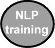

| 自分とまわりを変える魔法のNLP実践トレーニング | |
| 椎名規夫 | |
| kininalubooks (2014) | |
は じ め に●日本ではＮＬＰは通じないのか？
ＮＬＰのトレーナーとして、こんなことを本にしてもいいものか迷いました。
しかし、「この１冊でＮＬＰのすべてが分かる本を書いてほしい」と出版社の方に依頼されたとき、自分が多くの方と体験したことを正直に残したいと思いました。
ご存知のように、ＮＬＰは卓越した成果を残してきました。
日本でＮＬＰのトレーニングを続けてきた私たちはもちろん、私たちと関わってくれた方々が奇跡的な足跡をたくさん残してくれました。
・５つの病院、そして臨床心理士にまで見放された摂食障害のご子息を、半年で改善させていったお母さん。
・ワンマン経営の自分に気づかなくて社員が離れ倒産寸前。その危機を回避して今では業界のリーダー企業にまでした経営者。
・乳児がいるのに夫と離婚。生活費を削ってＮＬＰを学び、同じ境遇の方に手を差し伸べているお母さん。
・収入の豊かさを追い求めて一部上場企業で最年少営業管理職。ところがハートに響く仕事を見つけて会社を退職。今ではＮＬＰトレーナー。
・自分の役割に目覚めたくましく自立した、仕事をしなくても生活できたニート。
・両親の言う通りの人生で大人になる。しかし、36歳で不一致感のある仕事に疑問を感じてＮＬＰに出合い、やっと自分らしい生き方を見つけた医師。
・やりたい仕事に巡り会い、これまでの生活とバランス良く充実した人生を送り始めた主婦。
熱心にＮＬＰに取り組んでくれた方の成果は、私たちをいつも驚かせてくれました。
ＮＬＰは卓越したスキルです。ところが、ＮＬＰはアメリカ生まれです。アメリカの言語から生まれました。言語は文化から生まれます。だから、アメリカ生まれのＮＬＰを文化の違う日本で使うには、そのままではうまくいかない部分があるのです。
たとえば、日本には『ねぎらい』という言葉があります。ところが、アメリカには『ねぎらい』という言葉がないのです。
『ねぎらい』という言葉を和英辞典で調べてみると、「appreciation」もしくは「thank」、「感謝」というように訳されます。『ねぎらう』という言葉を和英辞典で調べてみると、「reward」「報酬を与える」と訳されるのです。『ねぎらい』と『感謝』は似ていますが違います。そして、『ねぎらう』と『報酬を与える』も意味が違います。
たとえば、結婚したばかりの社員に、夜遅くまでかかる無理な仕事を依頼し、彼がそれをやり遂げたとします。
「君に頼んでよかった。本当にありがとう」と感謝することができます。
「もしかしたら、奥さんにも心配させたかなぁ？ 責任ある仕事をしてくれたね」とねぎらうこともできます。「昇給を考えるね」と報酬を与えることもできます。
「感謝」「ねぎらい」「報酬」。どの言葉をかけられたら、あなたは一番心に響きますか？
もちろん、人それぞれでしょう。しかし、彼がその仕事をすることで犠牲にした新婚の奥様の存在に対して、また、責任ある仕事に対しての『ねぎらい』の言葉が、どんなに心の奥にしみることでしょう。
「ねぎらい」は日本人として、とても大切な習慣であり文化です。
故河合隼雄氏（元文化庁長官。元京都大学名誉教授。日本臨床心理士資格認定協会を設立し、臨床心理士の資格整備に大きな貢献を果たした）は、著書「ユング心理学と仏教」の中で欧米人と日本人の違いを次のように表現しています。
「......パーティーでスピーチをした際に、私はアメリカ人と日本人のスタイルの基本的な差について話をしました。アメリカ人はそのスピーチをジョークで始めるのに対して、日本人は弁解で始める......日本で人々が何かのことで集まってくると、彼らはある種の一体感を共有します。......したがって、誰かがスピーカーになると、その人は他の人々から区別されることについて弁解しなくてはなりません。......しかし、西洋ではたとい一同に会したとしても、それぞれが他とは異なる個人であります。したがって、典型的なアメリカ人のスピーカーは何かジョークを言って、人々が笑いを共有することによって一体感を感じられるようにするのです......」
言われてみれば、そうですよね。アカデミー賞の授賞式などで見られるアメリカ人のスピーチは、ジョークで一体感をつくることから始まります。
アメリカは個を大切にする文化です。一方、日本人は、「僭越ですが......」や「ご紹介にあずかりました」という言葉からスピーチが始まります。日本人は一体感、和を大切にする文化です。
ＮＬＰは、このように文化が違うアメリカで生れたものです。ですから、文化や言語的な違いを無視して使ってしまったら、うまくいかないことがあるのは当然だと思うのです。
ＮＬＰは卓越したスキルです。でも、柔軟性をもって学んでください。
私は、文化の違う日本でＮＬＰを学ぶ方に、不必要な違和感を覚えてもらいたくありません。言葉の魔法を使ってたくさんの奇跡を残したＮＬＰを、多くの方に広めたいのです。
日本の文化、言語を大切にしていただきたいのです。日本人が持つ「ねぎらい」の魅力を生かしながら、言葉の魔法を楽しんでください。
私に心理学を教えてくれた師匠がいます。この世界の魅力に私を引き込んでくれた、横浜国立大学保健管理センター准教授の堀之内高久先生です。約28年前に、日本でＮＬＰに出会っているそうです。
そんな堀之内先生のエピソードを一つご紹介します。
堀之内先生との待ち合わせに、30分遅刻しそうになった方から教えていただきました。
彼は電話で「先生、申し訳ありません。今日の待ち合わせ、30分遅刻します」と連絡したそうです。すると、先生は「30分遅れるのですね。分かりました。待つ僕より、待たせるあなたのほうがお辛いでしょう。どうぞ、ごゆっくり来てください」と言ったそうです。
『待つ僕より、待たせるあなたのほうがお辛いでしょう』
日本人は、こんなに素晴らしい「ねぎらい」という文化を持っています。その文化を大切にしながら、アメリカ生まれの卓越したスキル『ＮＬＰ』と向き合ってください。
誤解のないようにしておきます。ＮＬＰが日本人に役に立たない、というのではありません。ＮＬＰは、素晴らしいスキルです。ちょっと工夫するだけで、誰にでも奇跡が起こせます。
ＮＬＰを否定するつもりは、一切ありません。私に数々の奇跡を経験させてくれたＮＬＰの開発者、リチャード･バンドラー博士やジョン・グリンダー博士に深く尊敬しています。
ただ、効果があるようにＮＬＰを使ってほしいのです。
そうすれば、言葉で奇跡を起こすのは、今度はあなたの番です。
椎名 規夫
ＮＬＰとは？
－Ｎｅｕｒｏ－（神経） 五感：体験は脳が私たちの五感を通して認知してつくられます。
そして、私たちの行動は５つの感覚（視覚、聴覚、身体感覚、嗅覚、味覚）を通して情報を受け取り、そして処理するプロセスから起こります。そのプロセスを司るのが五感です。
－Ｌｉｎｇｕｉｓｔｉｃ－（言語） 言語＝言葉＋非言語
人間は、言語的あるいは非言語コミュニケーションを通して、神経プロセスを経て得られた情報をコード化し、意味を与えて、他の人とどのように関わりを持つかを決めています。
－Ｐｒｏｇｒａｍｍｉｎｇ－（プログラミング）
プログラムは、五感を通した体験から作られます。そして、プログラムが作られると、私たちはプログラムに行動がコントロールされます。
プログラムとは、特定の望ましい目標と成果を達成するために、人間はコミュニケーションにおいて自由に思考や行動を組織立てることができる能力です。
ＮＬＰは、体験、プログラム、言語の相互作用がどのように私たちの身体や行動のパターンに影響を与えているかというしくみを学び、実践する手法です。この手法を身につけることによって、私たちは人生のさまざまな局面で、より効果的な成果を出すことができるのです。
◆自分とまわりを変える魔法のＮＬＰ実践トレーニング◆目 次
第１章 言葉で奇跡を起こす
【Ｌ】傾聴の限界
〔相手の座り方で「不倫している」ことがわかりますか？〕
───言語とは、言葉と非言語
不倫して罪悪感に苦しんでいる人は、特徴的な座り方で分かります。カウンセリングに来る人の座り方で「不倫している」ことを察知することができます。
そんな話をＮＬＰ入門コースですると、「椎名トレーナー、不倫している人の座り方を教えてください」と質問されます。
卓越したコミュニケーターは、相手の言葉とコミュニケーションするだけではありません。非言語と言われる部分とコミュニケーションするのです。
ＮＬＰの【Ｌ（linguistic）】は言語を意味します。
そして、ＮＬＰでいう言語とは言葉と非言語を指します。
非言語とは、言葉以外で伝わってくるメッセージのことです。
たとえば、楽しみにしていたレストランでの食事で、がっかりした思い出はありませんか？
スタッフの態度次第で、楽しみにしていた食事が台無しになるときがあります。身だしなみの整っていないスタッフが注文をとりにきた瞬間、食欲をなくすことがあります。また、スタッフの笑顔や態度で、私たちは期待以上に気分よく食事ができるときがあります。
このように、コミュニケーションにおいて私たちが影響を受けるのは言葉だけではありません。実際に大きな影響を受けるのは、非言語のほうなのです。
非言語には声の質、仕草、気持ち、呼吸、感情、思考、時制、プロセス、身体反応などがあります。
代表的な非言語である身体反応は、言葉と違って意図的にウソをつくことができません。
たとえば、ウソをついている人の表情を見て、私たちはそれを察知できるときがあるでしょう。お気に入りの人が目の前に座れば、無意識に顔の表情が緩んでしまい、周りの人に気づかれることもあります。
〔「人の話をよく聞きなさい」と言われて育ったのではないですか？〕
───言葉で伝え、言葉以外でも伝える技術
ＮＬＰを学びに来る人の中には、カウンセリングやコーチングを学んだ人もいます。
そして、あるスキルを大切にする傾向があります。
読者の皆さんも、小さい頃から「人の話をよく聞きなさい（傾聴しなさい）」と言われてきた経験があると思います。
傾聴を大切にする習慣を持つ私たちは、人の話す言葉に左右されてしまいます。
でも、言葉でコミュニケーションするのには限界があります。
たとえば、あるパーティーに行って、目の前に美味しいお寿司がひとつだけ残っていたとします。そこで、親切に「どうぞ」とすすめられても、お腹がすいているのに遠慮したりします。また、目の前に好きな人がいて、友達に「この人のこと気に入った？」と聞かれても、なかなか素直に「そうだね！」とは言えないものです。
このように、人はなかなか本心を口には出しません。ときには、本心を隠すことだってするのです。
ですから、不倫して罪悪感に苦しんでいる人は、「私、不倫して苦しいんです」と、カウンセラーには言わないのです。自分の本心をオブラートに包んで、「主人とうまくいってないんです」などと言いながら相談に来るのです。
ですから、本当のことを言葉にしないクライアントが相談に来た場合には、言葉の裏側にあるメッセージとコミュニケーションする必要があるのです。
でも、勘違いしないでください。言葉が信用できないわけではありません。傾聴が無駄なのではありません。傾聴することは大切なことです。
しかし、カウンセリングなどにおける深いコミュニケーションでは、相手が言葉にできない気持ちを察するという、カウンセラーの姿勢が大切です。
そして、組織でリーダーと呼ばれる人は、部下が言葉にできない気持ちを察することが重要であるということは言うまでもありません。
それは夫婦、親子、恋人同士でも当然のことです。
〔相手が心を開かないのはなぜですか？〕
───ラポールで始まり、ラポールで終わる
相手が本当のことを言っていなくても、相手が不倫していると気づいても、それを言葉に出して確認する必要はありません。
カウンセリングが進んで、深い信頼関係が構築できれば、相手から心を開いて話してくれます。
カウンセリングが失敗する一番の理由は、相手との信頼関係が欠けていることです。
ＮＬＰでは、相手と信頼関係が築かれている状態をラポールと言います。
相手が心を開かないとしたら、その原因は相手にあるのではありません。
深いラポールを相手と構築できない、カウンセラーやコーチ側に責任があるのです。
相手が問題を言葉にしなくても、心の中の問題は解決できます。少しだけ高度なスキルが必要ですが......。
ＮＬＰを学ぶことで、言葉という情報がなくても、非言語の情報だけで相手の問題を解消することが誰にでもできるようになります。
非言語とコミュニケーションが上手になると、相手との深いラポールをつくり、深く関わることができるようになるのです。
〔どうすれば相手とラポールを構築することができますか？〕
───非言語にペースを合わせる
それでは、どうすれば深いラポールを構築することができるのでしょう。
まずは、相手の言葉に合わせることです。
たとえば、相手の話す言葉に合わせて、キーワードとなる言葉や語尾をオウム返しにします。
それをＮＬＰのスキルではバックトラッキングと呼びます。
さらに、バックトラッキングのスキルの中には、相手の感情をフィードバックするやり方もあります。
深いラポールの構築に絶対に欠かせないスキルが、相手の非言語に合わせることです。
時々、言葉レベルでの傾聴の限界とＮＬＰの非言語レベルにおけるコミュニケーションの特徴をお話しすると、コーチ、カウンセラー、臨床心理士の方々からご指摘を受けます。
「傾聴とは、言葉とと非言語両方のメッセージに耳を傾けることだ。私たちだって非言語のメッセージにも注目している」。
もちろん、そうだと思います。
そこで、カウンセリングやコーチングを学んできた人に私は、聞いてみるのです。
具体的にどうやって、非言語とコミュニケーションしているのですか？
言葉と気持ちにギャップのある人に、具体的にどのようにアプローチすればいいのですか？
深い問題を言葉にしたくない人に、どのように対処していけばいいのですか？
すると、「言葉の裏側にある価値観を感じる」「言葉と言葉の間の感情を読み取る」などという曖昧な答えが返ってきます。
非言語というものがあることは、カウンセリングやコーチングを学んできた人なら誰でも知っていることです。
ただ、非言語のメッセージを感じ取ることができても、非言語とうまくコミュニケーションするスキルを明示できる人が少ないようです。
だから、「非言語や無意識からのメッセージとコミュニケーションをとる具体的な方法は？」と聞くと、多くの人が口ごもってしまうのです。
それでは、次に非言語のコミュニケーションの事例を紹介しましょう。
感情のコントロール
〔遅刻する部下に上司はどのように対応しますか？〕
───成果に焦点を当てる
たとえば、あなたが営業部の部長だとしてください。
ある朝、あなたは部下とお昼の１時に大切なお客様の事務所で待ち合わせをする約束をしました。
あなたは、午前中の仕事を終え、昼食をとり約束通り待ち合わせ場所で部下を待っています。
すると突然、部下があわてて電話してきます。
「ぶ、部長！ 20分遅刻します！ どうしましょう！」
そんなときに、営業部長のあなただったら、どのように部下と対応しますか？
×「オイ。何やってんだよ！ 遅刻するなんて、社会人として失格だろ！ どういうつもりなんだよ！ 約束したじゃねーか！」
感情に任せて、そんな言葉が出てくるかもしれませんね。当然ですよね。朝、約束したのです。
部下を責めたくなる気持ちは分かります。
しかし、自分の感情を放出するようにあなたがしゃべってしまったら、部下はどんな状態になるでしょう。
大切なお客様のところに来ても、ドキドキして焦ってしまいますね。
そして、焦って動揺した気持ちで部下は仕事をするのです。
そんな動揺した部下に、いい仕事ができるでしょうか？
部下を怒鳴っても、決していい仕事にはつながらないような気がします。
こんなとき、上司としてどのように声をかけたら、ベストなのでしょうか？
○「20分遅れる？ 社会人として、遅れるなんてありえないことだよね。
でも、君も大事な仕事があって遅れるんだよな。
最近は責任がある仕事をやるようになったな！
待つ俺より、待たせるお前のほうが辛いだろう。
この場は俺に任せておけ。」
もし、こんな風に言ってあげられたらどうでしょう。部下は、遅刻が悪いことは分かっているのです。
ですから、そんな部下の気持ちとコミュニケーションができたらどうでしょう。
「待つ俺より、待たせるお前のほうが辛いだろう」
こんな、感情に対するフィードバックができたら、あなたは部下とどんな信頼関係を構築することができるでしょう。
部下は遅れて客先に着いたとしても、大切なお客さんと落ち着いて冷静に仕事をすることができると思います。
そして、懐の深い上司に対して、厚い信頼感を持つようになるでしょう。
大切なことは、私たちの目的は成果を上げることだということです。
目的は、上司が自分の感情を発散させることではありません。
部下と一緒に仕事をして、成果を出すことです。
自分の感情をぶつけて部下を焦らせても、いい成果は手に入らないような気がします。
自分の感情に任せて、部下を焦らせる一言を言うのか、
仕事で成果を出してもらうために、部下が落ち着ける言葉をかけるのか、
言葉の使い方ひとつで、成果が全く違うと思いませんか。
もちろん、この部下がどんなに注意しても遅刻する癖が直らないのであれば、会社を辞めてもらうという選択もＯＫです。
しかし、この時点で大事なことは、成果を出してもらうことです。
誰でも自分の感情を思わず口に出してしまいたくなります。
しかし、卓越した成果を出すリーダーは自分の感情をコントロールして、仕事の成果や家族の成果に焦点を当てたコミュニケーションをしているのです。
ＮＬＰは在り方です。
自分がどんな言葉を使って生きていくのか......
ＮＬＰは関わりです。
自分がどんな言葉で、家族、会社、地域、仲間たちと関わっていくのか......。
ＮＬＰは広がりです。
言葉を通して、関わる人たちの可能性を広げることができるのです。
コミュニケーションの目的は、自分の感情を発散することではありません。
〔部下が「会社を辞めたい」と言ってきたとき、どう答えますか？〕
───信頼関係を築く
もう一つ例を挙げましょう。
会社を辞めたいという人の理由は、大手の人材会社の調査では共通しているようです。「会社を辞めたい」という人の理由のナンバーワンは人間関係に関する問題です。
もし、人間関係に悩んだ社員が「会社を辞めたい」と言ってきたら、上司であるあなたは、どう答えますか？
考えてみてください。
上司としての最悪の対応の一つが、次のような質問です。
×「どうして辞めるの？ 理由を聞かせて......」
もし、そんな対応をされたら、「家業を継ぐので実家に帰りたい」「家族の面倒を見たいので近くの会社に移りたい」などと、絶対に会社を辞めることを引きとめられない理由を言ってまで、会社を辞めようとするでしょう。
なぜ、人間関係に悩んでいるのに、正直に上司に言わずに会社を辞めようとするのでしょう。
なぜ、仲のいい友人には人間関係の相談ができるのに、上司には相談できないのでしょう。
その答えは簡単です。
人間関係がうまくいかないのは、決して自慢できることではありません。信頼関係のない上司には、そんなことを相談できないのです。
そうです。
友人とは信頼関係があるから、人間関係の問題を相談できるのです。
すると、部下が辞めるのは、部下と信頼関係が築けなかった上司の責任でもあるのです。
そんなときは、次のような対応をすると、部下は会社を辞めることを考えなおすことがあるかもしれません。
「会社を辞めたい」と打ち明けてきた部下に対して、
○「私は上司として失格だね。君がそんなに悩んでいたことに気がつかなくて。
その決断をするのは辛かったろう。
どんなことで悩んでいたのか私に話してくれないかなぁ？」
このように、社員が会社を辞める・辞めないという視点にフォーカスするのではなくて、上司として部下の問題に気づけなかったことへの謝罪のメッセージとともに、部下が悩み苦しんでいたプロセスとコミュニケーションできたとしたらどうでしょう？
非言語コミュニケーション
部下が大切なお客さんとの待ち合わせに遅れた例と、会社を辞めるといった部下の例をお話しました。
コミュニケーションというのは、言葉のコミュニケーションと、言葉以外のコミュニケーションがあります。
この言葉以外のメッセージを、ＮＬＰでは非言語メッセージと言います。
コミュニケーションの達人は、言葉レベルのコミュニケーション、つまり意識的なコミュニケーションよりも、非言語のコミュニケーション、つまり無意識のコミュニケーションも大切にしています。
そして、卓越したコミュニケーターは、言葉や非言語を通して、相手の無意識とコミュニケーションをしているのです。
相手の非言語メッセージが理解できれば、感情のコントロールもできるようになります。
傾聴は大切です。
しかし、言葉だけの傾聴には、限界があります。
ＮＬＰの【Ｌ】は言語
【Ｌ（linguistic）】
言語＝言葉＋非言語
●言葉のメッセージ（デジタルメッセージ）
「遅刻しました」
●非言語メッセージ（アナログメッセージ）
声の質（高低、スピード）、仕草
振る舞い、身体反応、プロセス
呼吸、気持ち、感情、思考、時制
例）声の質 ：声のトーンが弱い
身体反応：体が委縮している
呼吸 ：走ってきたようで呼吸が荒い
プロセス：時間通りに行きたかった
気持ち ：遅刻して申し訳ない
感情 ：「また、叱られるのかな？ドキドキ」
思考 ：「俺って、駄目だなぁ！」
優れたコミュニケーターは、言葉のメッセージと非言語メッセージを瞬時に受け取り、高度なコミュニケーションをしているのです。
【Ｐ】人生は無意識に支配されている
〔赤信号で止まるのは、なぜ？〕
───無意識にあるルール
ＮＬＰの核心部分の一つをお話します。
このお話は、私たちの望ましい未来をスピーディーに創り出すお手伝いをしてくれます。
また、現在の状態をもっと良くしたいと思うのであれば、望むような状態にするお手伝いをしてくれます。
ＮＬＰは、分野を超えて卓越した成果を出している者たちのやり方を体系化したスキルです。
ですから、もし今、思うような結果を残していないなら、この後のお話が役立つかもしれません。
日常生活で当たり前に行動していることがあります。
交差点を渡るときに、私たちは赤信号では止まります。
青信号になると進みます。
私たちは日常生活において、習慣となっているこのようなルールに従い生活しています。
しかし、このルールを通常は意識していません。
赤信号で止まっていた状態から青信号になったときに「あれ？ どうすればいいんだっけ？」と考え込む人は少ないですね。
しかし、信号がないアフリカの奥地に住む人が、いきなり日本に来ても、横断歩道の赤信号や青信号の意味は分からないと思います。
このように、普段意識することのない習慣は、私たちが快適で安全に社会生活を送るためのルールです。
安全に社会生活を送るためのルールは、他にもたくさん私たちの無意識の中にあります。
たとえば、次のような無意識の中にあるルールは私たちを守ってくれます。
「夜道の一人歩きは危ない」
「学ぶことが成長に繋がる」
「甘い話に簡単に乗らない」
このようなルールを、通常、私たちは意識していません。
信号が変わると、進んだり止まったりと行動が変わります。
日が短くなると「夜道の一人歩きは危ない」というルールが自然に発動し、自宅までの帰り道を変えさせたりするかもしれません。
そうです。このようなルールは通常無意識にあり、私たちの行動を自動的にコントロールしています。
そして、そんなルールが、いつも正しければいいのですが、そうとは限りません。
無意識にある様々なルール：プログラム
このように、無意識には、私たちの行動をコントロールするルールがあります。
ＮＬＰでは、それをプログラムと呼んでいます。
ＮＬＰで扱うプログラムには、「メタプログラム」「価値観」「信念」「習慣」「トラウマ」「判断基準」と呼ばれる様々な種類のものがあります。
私たちの行動や人生は、プログラムの影響を大きく受けています。
つまり、意識できない部分が、人生の大半をコントロールしている、とも言えるのです。
ところで、私たちの行動や人生に影響を及ぼす「プログラム」（Ｐ）は、どのように作られるのでしょう？
実は、プログラムができる過程には、五感を伴う体験（Ｎ）が深く関わっているのです。
これから、プログラムができるまでのプロセスを、二つご紹介しましょう。
体験とプログラムの関係
もう数年前のことです。
30代前半の女性客室乗務員の人が、年上の女性の上司とうまくいかないと相談に来ました。
男性の上司とはうまく仕事ができるのに、女性の上司とはうまくいかないのです。
どうしてなのでしょう？
彼女は１９９０年代、当時の就職氷河期に客室乗務員として採用された人です。
外見的にも素敵な人でしたが、話を聞いていると内面の美しさにも魅力がある人でした。
彼女と話をしていくと、彼女の中に、あるプログラムを作った体験があることがわかりました。
それは、彼女が少女時代の出来事でした。家族は、お父さんとお母さん、お父さんの祖父母、そして、彼女は三人姉妹の長女です。
彼女が物心ついた頃から、両親は不仲で毎日のように喧嘩していたそうです。
お父さんは喧嘩しても、自分の両親と一緒に時間を過ごすことができました。夫婦喧嘩のストレスをそこで発散することができました。
しかし、お母さんには誰一人味方がいませんでした。小さな三人姉妹を置いて、飲みに行くことなんてもちろんできません。
そして、夫婦喧嘩で溜まったストレスや怒りの感情は、長女である彼女に向けられたのです。
毎日毎日、母から次のような言葉を聞かされたそうです。
「結婚しなきゃよかった......」
「男は結婚すると変わる」
「騙された......」
「失敗した」
「男は信用できない」
このような体験の繰り返しで、プログラムが作られます。
皆さん、「青信号は渡る」「赤信号は止まる」、というのは、学校の先生や親から繰り返し同じことを体験することでプログラム化されたでしょう。
彼女も同じでした。物心がついてから、毎日繰り返しお母さんから聞かされた言葉で彼女の中に、あるプログラムができたのです。
男に対するプログラムです。
彼女が成長して思春期を迎えた頃、周りの友達は自由に恋愛を楽しんでいました。
でも彼女は、「男の人に騙される」、「男は信用できない」とプログラムされていますから、積極的に恋愛ができません。
恋愛禁止令みたいなものをお母さんからもらったからです。
けれど人間は誰もが、より深い無意識のところで「人と繋がっていたい」、「子孫を残したい」というものを持っています。
しかし、30歳を過ぎた彼女は、これまで深い恋愛を経験したことがなかったのです。物心ついた頃の体験とプログラムは、20年以上が経っても、行動に影響を与えていたのです。
そして、理解し難いかもしれないけれど、年上の女性上司とうまくいかないのは、お母さんに対する怒りが表現されたものなのです。
「人と繋がっていたい」「子孫を残したい」という、人間として当たり前の使命を邪魔する人に対しての怒りが、母親への怒りとなり、その反動で、母親と同じ年上の女性である、上司との関係がどうしてもうまくいかないという症状が出たのです。
私たちは無意識にあるプログラムの存在に、なかなか気づくことができません。
しかし、症状というサインで、私たちは自分の中にある、自分を抑圧しているプログラムに気づくことができます。
カウンセリングの後、彼女は私にこう言い残して帰って行きました。
「『結婚したい』という自分がいることに気がつきました！」
あれから数年。何通かの手紙をいただきました。今では二人の子どもを持ち、幸せに暮らしています。
あなたの無意識があなたの人生をコントロールしています。
もし、ある症状に気づいているなら、それは、あるプログラムと、人間として誰もが持っている深い部分との葛藤の表れかもしれません。
両親との関わり方を決めた出来事
もう一つの例をお話ししましょう。
たった一度の強烈な体験によって、プログラムが完成した例です。
私がまだ、５歳くらいだった頃の話です。もう、40年以上前の話です。
あの頃、盆と正月は母親の実家に里帰りする習慣がありました。
小さかった私にとって、お小遣いが貰える実家への里帰りは、楽しみな年中行事の一つでした。
母親の実家に遊びに行くと同じ年頃のいとこが、新しいおもちゃで遊んでいました。
私にそれを貸してくれませんでした。いとこはケチだったわけではありません。
いとこは、買ってもらったばかりのおもちゃだったので、夢中で遊んでいただけだったのです。
わがままな私は、いとこと同じおもちゃがほしくなり、ダダをこねます。
「お母ちゃん。僕も、あのおもちゃがほしい！」
優しい母親に言ったら困っていました。
なぜならば、母親は車の運転免許を持っていないので、おもちゃ屋さんがある市内まで私を連れていくことができないからです。
通常であれば、そこにいる母親の兄弟が、私たちを市内に連れて行ってくれるのですが、あいにく運転できる大人たちはお酒を飲んでいて、それがかないませんでした。
しかし、わがままな私はそんなことはお構いなし。
母親を見てダメなら、近くにいた叔父たちに、「ねぇ！ おもちゃ屋さんに連れて行って」と大声でお願いを続けたのです。
それを見ていた父親は、「のりお。我慢しなさい！」
私は「やだ、やだ、ほしい！」
父は「日曜日は、おもちゃ屋は休みだ。だから買いに行けない」
私は「絶対ウソだ！ 日曜日におもちゃ屋が、休みなわけがない」
幼かった私でも、さすがにそれくらいは分かりました。それがきっかけで、さらに私は大暴れして騒ぎました。
「絶対におもちゃ屋は休みじゃない。今すぐ買って！」
すると、いよいよ父もキレて、信じられない行動に出ます。
なんと父は、私の足首を持って逆さまにして、ベランダから全身を家の外につるして、グルグルと回したのです！
この瞬間、私の内側にプログラムが作られました。
「父親は怖い」
「絶対にこの人には頼み事をするのはやめよう」と決断するのです。
そして、それが父との40年間の関係を構築していきます。
私のわがままが引き起こした出来事ですが、それ以来、父親には何も頼むことをしなかったような気がします。
というか、頼み事が怖くてできなかったのでしょう。
そうです。たった一度の体験でもプログラムは作られるのです。
そして、それが相手との関係を決めてしまうのです。
〔以前に恥をかいた経験はありませんか？〕
───安易に問題を解決しない
皆さん、これから小学２年生にタイムスリップしましょう！
今日は授業参観日です。あなたの両親も同級生の両親も、たくさん来ていてクラスの後ろから見ています。
そして、あなたの友達の太郎君は、ちょっと勉強が苦手な子どもです。
体育は得意だけれど、国語、算数、理科、社会は苦手な太郎君です。
担任の先生は、勉強ができなくても、体育が得意で明るく元気な太郎君が大好きです。授業が始まり、担任の先生が漢字を黒板に書いて問題を出します。
「この漢字、何て読むか分かる人？」
太郎君は、その漢字が読めません。
しかし、太郎君以外のクラスメイトはみんな「はい」「はぁーい」「先生、ハイ」と手を挙げています。
手が挙がっていないのは、国語が苦手で漢字が読めない太郎君だけです。
すると、後ろから太郎君の両親が「○○って読むんだよ」と小声で教えてくれようとしているのですが、太郎君の耳には届きません。
太郎君は、「分からないけれど、両親の手前、手を挙げようか！」「みんな分かっているのに、僕だけ分からないなんて恥ずかしいな！」
そんなプレッシャーの中で、先生に指されないことを願い、自信なくそろそろと手を挙げた太郎君。
すると、大好きな太郎君に花を持たせたい先生は、珍しく手を挙げた彼を指すのです。
「太郎君。何て読みますか？」
しばしの沈黙の後、太郎君は「分かりません」と言うでしょう。
すると、クラスは大爆笑することでしょう。
そのとき、太郎君にプログラムができます。
「恥かいちゃったな、これから先は、人前で積極的に話すことはやーめた」というプログラムです。
人間というのはいつも、安心・安全・安定した状態でいたい生き物だそうです。
「不快」より「快」な状態でいたい生き物です。
ですから、太郎君が「人前で積極的に話さない」というプログラムを持つことは、当然のことかもしれません。
人前で話すと思わず赤面してしまったり、極度に緊張してしまう人も、過去の恥をかいた体験が影響している場合があるようです。
もちろん、すべての人が同じような体験で、同じようなプログラムを持つとは断定できませんが......。
〔過去の嫌な体験からのトラウマを直す努力をしていませんか？〕
───感情の手当と思考の手当
太郎君は、二つのメッセージを無意識に組み込みました。
一つが自分を制限する思考「人前で積極的に話すと恥をかく」。
もう一つが、「私は恥をかいて、辛い経験をした」というトラウマ的な傷ついた感情です。
ＮＬＰが目指すものは行動変容です。
人間が変化し行動変容するには、二つの障害があります。「思考」と「感情」です。「思考」というのは、ほとんどが思い込みや妄想です。
太郎君の場合も、「人前では積極的に話すと恥をかく」というたった一度の体験からきた思考（思い込み、妄想）が、人前で話すすべての機会に制限を作ってしまったのです。
もう一つが、「もう二度と恥をかきたくない」という感情が行動変容を邪魔します。
こんな場合には、思考と感情、両方への取り組みが必要です。
ここで重要なポイントが「安易に問題を解決しない」ということです。
なぜならば、太郎君が小学校２年生で身に付けた「人前では積極的に話すと恥をかく」という思考は、見方を変えると「人の話をよく聞くことができる」「その場の雰囲気を感じ取れる」という能力であり、彼の持ち味なのです。
このスキルをＮＬＰでは、リフレーミングと呼びます。
リフレーミングとは、出来事の見方を変えて、受け取り方や意味づけを変えることです。
たとえば、「雪の少ない冬」はスキー場関係者やスキー愛好家にはネガティブな出来事ですが、その地域で暮らす人にとっては面倒な雪下ろしがなくなったり、幼い子どもが安全に学校へ登下校できるポジティブな出来事として捉えることもできます。
ある視点から見ると短所に見えることでも、視点を変えると長所や持ち味になるのです。
ＮＬＰや心理学を誤解されている人は、太郎君が「人前で積極的に話すことができない」プログラムに対して、過去の体験をやり直すトレーニングをやったりします。
しかし、この場合、そのような取り組みをすることは間違いのような気がします。
卓越したＮＬＰトレーナーは次のような思考と感情へのアプローチをするでしょう。「親の期待に応えよう」という太郎君の気持ち。「将来、同じように恥をかいてしまうかも知れない」という怖れ。
このような感情に対する取り組みをするために、過去の体験にアプローチすることは意味があります。
そして、「人前で話すと恥をかいてしまう」という思考（妄想）に対しては、「人の話をよく聞くことができる」、「その場の雰囲気を冷静に読み取れる」とリフレーミングするのです。
リフレーミングをすることで長所や持ち味になる思考（妄想）を安易に変えてはいけないのです。
〔リフレーミングすることで長所となる性格はありませんか？〕
───プログラムは安心して生活するためのルール
プログラムは私たちの社会生活を守るためのルールだとお話ししました。
だから、自分を守ってくれているプログラムを安易に変える必要はありません。
自分が安心して生活するために作られたプログラムは、リフレーミングすることによって長所と認識するのです。
「人の意見がよく聞ける」や「その場の雰囲気を冷静に読み取る」という自身の持ち味を持った上で、自分の意見を積極的に発言するトレーニングをすればいいのです。
問題を解決してしまうことは「百害あって一利なし」と言う心理臨床家がいるほどです。
〔「苦しい」という気持ちがあれば、それは、どうしてなのか考えてみてください！〕
───症状は私たちを成長させるサイン
さて、太郎君が大人になり、様々な経験をします。
30代になり仕事でもプロジェクトリーダーとして活躍しようとすると、ある症状が出始めました。
会議の場で、リーダーである太郎君が自分の意見を積極的に言わなかったことが原因で、プロジェクトが失敗してしまうのです。
そして太郎君は、後悔するのです。
「あのとき、ちゃんと自分の意見を言えたらな......」。
「もっと積極的に話ができたらな」。
貢献することに積極的でなかった自分が不甲斐なく、太郎君はだんだんと苦しくなります。この苦しい気持ちが症状です。
「苦しい」という気持ち、そして「どうして苦しいのか」というのがポイントです。
今までは人前で話すのは、恥ずかしいと思っていた太郎君。
積極的にしないほうが安心だと思っていました。でも、「もっともっと積極的に関わったほうが、いろんな人に役立てたのに。もっと人生が豊かになれたのに」。そういう思いが芽生えてきて、これまで自分を守ってきたプログラムと葛藤するのです。
そうです。今までのプログラムという枠組みの中では窮屈になったのです。
「もっと世の中に役立ちたいよぉ！ 成長したいよぉ！」という無意識からのメッセージが、症状というサインで意識化されたのです。
そして、自分の無意識にあるプログラムと、もっと深い無意識にあるメッセージとの葛藤に対してアプローチすることを、ＮＬＰでは、葛藤の統合、インテグレーションなどと呼びます。
葛藤を解決したらふしだらな女に......？
客室乗務員が年上の女性の上司とうまくいかないお話をしましたね。
あの例では、年上の女性上司とうまくコミュニケーションできないというのが症状です。
この事例で、これまで自分を守ってくれたプログラムを解決したらどうなりますか？
男に対するハードルが全くなくなり、悲惨な恋愛を繰り返す運命をたどってしまうかもしれません。
「男は女を騙す」というプログラムを壊してしまったら、すべての男を信じるようになってしまうかもしれません。（ちょっと、大げさですね。）
でも、お母さんからもらった、騙そうとする男から自分を守ってくれているプログラムは捨てなくていいのです。
彼女の「男は女を騙す」というプログラムを上手にリフレーミングすることが重要です。
たとえば、「男性を選ぶときは、慎重にしなければならない」「結婚に失敗したと言いながら、母は私たちをしっかりと育ててくれた」とリフレーミングすればいいのです。
彼女の症状は、ある意味、太郎君の場合と同じです。社会生活を安全に生きようとするプログラムから、はみ出そうとする何かが目覚めてきたのです。
「男は女を騙す」という無意識にあるプログラムと、「人と繋がっていたい」「子孫を残したい」という深い無意識との葛藤が、年上の上司とうまくいかないという症状として現れたのです。
人間なら誰もが持っている、深い無意識からのメッセージです。
深い無意識からのメッセージの一つは、元型エネルギーと呼ばれています。
元型エネルギーの表現は難しいのですが、あえて簡単にいえば次のようなものです。
「仲間を承認する」、「世の中に貢献する」、「繋がり、優しさ」、「勇気やパワーで愛するものを守る力」、「柔軟性、ユーモア、人を癒やす能力」等、人間なら誰でも持っているエネルギーのことです。
〔怒り、孤独、怖れ、罪悪感、不安、不一致感、焦り、寂しさ、悲しみ、そんな症状を持っていませんか？〕
───症状を歓迎しよう
怒り、孤独、怖れ、罪悪感、不安、不一致感、焦り、寂しさ、悲しみ。
あなたが今、こういうものを感じているとしたら、歓迎しましょう。
きっと、自分を守ってくれているプログラムと、深い無意識からのメッセージ（元型エネルギー）との葛藤かもしれないからです。
そして、そんな症状、気持ちが湧き上がってきたら、安易にそれを解決しようとしてはダメですよ！
繰り返しますが、それは自分の幅・枠を広げるチャンスだからです。
これまであなたを守ってくれていたプログラムの枠からはみ出ようとする、元型エネルギーの何かが目覚めてきたのです。
もちろんプログラムというルールの檻の中にずっといてもＯＫです。
いつまでも、症状の中にいてもいいのです。あなたが選択することだからです。
〔もし今、思い通りの状態でないのなら、あなたはどうしますか？〕
───すべてはあなたの選択から始まる
その状態をどうやって良い状態にしていこうかというのが、ＮＬＰの一つの特徴です。
人はいつも「快」な状態、安心・安全・安定した状態でいたいんです。
けれど「もっと良くなりたい！」と何かが目覚めてきたときには、そのサインを大切にしてあげてください。
ときには、無意識からの支配から、抜け出す必要があります。
プログラムに関して、整理しておきます。
①私たちは安心して社会生活を送るために、体験からつくられたプログラムに従って行動しています。
②プログラムの中には、「夜道の一人歩きは危ない」というように、あなたを守ってくれる種類のものがあります。
③プログラムの中には、「美人は冷たい」「お金を稼げば成功する」などのように、思い込みや妄想のようなものがあります。そんなプログラムは、手放すか、書き換える必要があります。
④プログラムの中には、「男に女は騙される」というようなものがあります。もし、それが制限となっている場合には、リフレーミングをするなどしてポジティブな思考に変えることができます。
⑤意識できるプログラムもあれば、無意識にあるプログラムもあります。たとえば、座って電車に乗っているときにお年寄りを見かければ、「お年寄りに席を譲る」というプログラムを意識することができる機会は多いでしょう。しかし、いつも同じようなタイプの異性を好きになってしまうプログラムに、自分が気づくことは少ないようです。
【Ｎ】体験とは、何か？
〔他人の内緒話に対して、どんな気持ちになりますか？〕
───妄想の世界にサヨナラしましょう
あなたがある会社で働いているとします。
そして、もし、同僚二人があなたのほうをちらちら見ながら、こそこそ内緒話を始めたとしたら、あなたはどんな気分になるでしょう。
「陰口を言われているんじゃないだろうか？」
「自分だけ仲間はずれにされて嫌だな」
「あの二人、気に入らねぇ！」
いずれにせよ、あまり良い気持ちがしませんね。
でも、同僚の二人がしていた内緒話の内容が、「あなたの誕生日に何をプレゼントしようか？ 美味しいケーキでも用意しようか？」と相談していたとしたらどうでしょう？
このように、あるシーンを見て、自分勝手に推測した勘違いによるトラブルは、誰にでもあるような気がします。
なぜ、このようなことが起きるのでしょう。
実は、私たちの脳は目から入ってきた情報をそのまま知覚しているのではないからです。
私たちは、視覚、聴覚、嗅覚、味覚、身体感覚の五感を通して、様々な体験をすることができます。
しかし、それをありのまま知覚しているのではありません。
目が見たものを、そのまま知覚しているのではないのです。
耳で聞こえたものを、そのまま知覚しているのではないのです。
私たちの体験というのは、脳が作り出したものなのです。
〔小学校の頃を思い出してみてください！〕
───目が見えなくても、耳が聞こえなくても体験できる
小学校の担任の先生を思い出してください。
ある顔が見えますね！
それは、今、あなたの目が見ているものではありません。
脳が過去の体験を思い出して、創り出していることですね。
次に、お気に入りの音楽を思い出して聞いてみてください。
そうです。その音楽です。しかし、それは今、あなたの耳から聞こえている音ではありません。脳が作り出している音なのです。
おいしい料理の味を思い出してください。
その料理を今食べているわけではありません。しかし、料理の味がよみがえるとしたら、その味覚も脳が作り出しています。
ある香水の香りを思い出しても、その香りは今、鼻が感じている匂いではありません。
私たちは、世界を認知するのに五感を使っているのですが、それを創り出しているのは脳だということです。
ところで、あなたには好きな色があると思います。
なぜ、あなたがその色が好きなのか、私には分かりません。
そして、あなたには嫌いな色があると思います。
もちろん、なぜ、あなたがその色が嫌いなのか、それは分かりません。
きっと、あなたのこれまでの体験から、好きな色と嫌いな色を脳が記憶しているからだと思います。
だから、ある色を見れば好感を持つことがあるでしょう。
ある色を見れば、不快に感じることがあるのです。
これでお分かりだと思います。
あなたが二人の同僚の内緒話を見て不快感を覚えたのは、あなたの脳が、「人前で内緒話をすることは不快を与えることだ」と記憶しているからです。
嫌いな色を見れば不快感を持つように、二人の内緒話のシーンを見て脳が不快を感じたのです。
あなたの誕生日を祝う相談をしている同僚二人の姿を勝手に解釈して、自分が創り出した妄想で、自分が不快感を覚えてしまうのです。なんともこっけいな話ではありませんか？
私たちの脳は、目や鼻が取り入れた情報を、そのまま感じているのではないのです。
私たちが、今見ているもの、聞こえているものは、脳が知覚したいように受け取っているということです。
ＮＬＰを学び始めたころの私には、受け入れがたい事実でした。
そして、脳科学に詳しい人の文献を覗いてみると、脳が「見ている」と知覚することの中で、実際に目から入ってくる情報は、わずか10％と言われているのです。
そう考えると、私たちの目、耳、鼻、口、身体が感じ取る能力と、脳がどのように知覚するかという関係が非常に大切になります。
ＮＬＰのＮは、五感による体験を指します。
私たちは、視覚、聴覚、嗅覚、味覚、身体感覚を通して世界を体験しています。
これがＮ（Neuro）です。
また、五感によって得られた情報は、そのまま知覚されるのではなく、脳の受け取り方によって知覚されるのです。
この脳の受け取り方がＰ（Programming）です。
五感で受け取っている体験が、どのようにプログラムによって歪曲されてしまうのか？
興味深いことですね。
そして、プログラムが引き起こす歪曲は、日常茶飯事に起きているのです。
〔彼女からのレスがなかなかないとき、あなたはどんな気持ちになりますか？〕
───妄想が引き起こすトラブル
誰も悪いことをしていないのに、妄想が大ゲンカを引き起こします。
お付き合いしている女性に電話したのに、折り返しの電話がかかってこなかったとします。彼女は電話の充電が切れていて、彼から着信があったことも分からないし、電話もできません。
さて、あなたはどう考えを巡らせますか？
こんなときに、私たちのプログラムは妄想をすることが得意です。
「電源切っているなんて、私に言えないことしているのかなぁ？」
「他の人とデートかな？」
挙句の果てに「嫌われているのかな？」と思うかもしれません。
さらに、彼女は自宅に帰っても彼の留守番電話にも気がつかずに、寝てしまったとします。
そして、翌日、携帯電話に残っている留守番電話に気づいて連絡します。
「昨日は、ごめんね。電話できなくて......」
すると、彼が「今頃、連絡して何やってたんだよ......」
お互いに、何も悪いことをしていないのに、大ゲンカに発展してしまうかもしれません。
勘違いがもとで仲の良かった恋人同士が別れることだってあります。
このような勘違いや誤解を避ける上でも、私たちはしっかりと現実を体験する五感を養い、妄想やプログラムからのコントロールを受けないようにしなければなりません。
私たちは実際に起こっていることを、歪曲して感じ取ってしまうのです。
自分のものの見方で見てしまうのです。
思い通りの人生を生きる
様々な外界の情報を取り入れる五感と脳が創り出す体験【Ｎ】。
大きな影響を創り出す言葉や非言語【Ｌ】。
私たちの行動や人生をコントロールする【Ｐ】。
【Ｎ】、【Ｌ】、【Ｐ】のそれぞれの役割や関係性についてお話してきました。
そして、第１章では現在の状態を中心に一緒に考えてきました。
しかし、ＮＬＰは今の状態の変化を扱うだけではありません。
思い通りの未来を創るお手伝いに関しても、ＮＬＰは大きな影響を与えてくれます。

〔実践トレーニング■こんな場合、どうしますか？〕
───あの人が苦手です......
人間関係で悩む人はたくさんいますね。それが、職場であれば、会社を辞める理由の上位にランキングされます。もちろん、プライベートでも苦手な人に対する悩みは、日常的に起きているような気がします。
ある部下があなたに悩みを相談しに来ます。
「実は、先輩のＸさんが苦手です。あの権威的な言葉を聴くと怒りを感じます」
考えてみてください。
さて、どのように対応したらいいでしょう。
部下に「Ｘさんにも良いところはあるでしょう。どうだろう、権威的なところじゃなくて、長所に目を向けてくれないか......」と言うこともできます。
及第点の対応と言えるかもしれませんね。
さて、卓越したコミュニケーターは、どう対応するでしょう？
もちろん、いろいろなパターンがあるという前提で、対応例を示してみましょう。
「それは、良い勉強をしているね。あなたが苦手だと感じることは、あなたが上司になったとき、後輩を持つ機会ができたときの学習をしているのです。
あなたが苦手と感じたり、嫌だと感じるときは、その人を反面教師にしてください。そして、憧れや好感が持てる人は達成目標にしてください。苦手な人もあこがれの人も、あなたを育てます。
そして、それでも我慢できないときには、もう一度、私に相談してください。一緒に考えましょう......」
こんな感じで対応ができたらどうでしょうか。
第２章 豊かな人生を手に入れる方法
知らぬが仏
〔皆さんは、会社の１年の成果をどうやって計っていますか？〕
───卓越性は時代を超えて
第１章で、プログラムが私たちの行動や人生を大きくコントロールしているとお話ししました。
そうであれば、これからの自分の人生を良くするために、手に入れる必要のあるプログラムがあるかもしれません。
もしかすると卓越した成果を出している人たちは、私たちの知らないプログラムを持っているのかもしれません。
２００８年に起きたリーマン・ブラザースの破たんに象徴される金融危機。
しかし、１００年に一度の不景気だと言われていても、それにあまり影響されなかった会社があります。それは、一握りだけではありません。また、ご存知のように、景気が良いと言われる時代でも倒産する会社は数多くあります。
すると、会社が倒産してしまうのは、景気・不景気の影響だけではないようです。
どんなに好景気、逆に不景気と言われている時代でも、社長や経営陣のプログラムによって会社の成果は全く異なるのです。
会社の経営に興味のない人もいると思いますが、「より豊かな人生」を手に入れるための、分かりやすい事例があるので、少しだけお付き合いください。
私は、経営コンサルタントとしての一面を持っています。企業経営者に対して、定期的にセミナーを開きます。
そこで、経営者に対してこんな質問をします。
皆さんは、会社の１年の成果をどうやって計っていますか？
すると、99％以上の人がこのように答えます。
「売上です」「利益です」「年収です」。
次に私は、ニコニコして次の質問をします。
もし、皆さんが会社の成果を売上や利益、年収で計るのであれば、皆さんの会社の仕事は、詐欺師でも、高利貸しでも、暴力団でもいいですね。売上や利益でしか、会社の成果が計れないのであれば、仕事は何でもいいんじゃないですか？
すると、セミナー参加者の多くは、何も言わずに黙ってしまいます。
景気が良かろうが悪かろうが、成長している会社の社長は、自分たちの会社の成果を売上や利益では計っていないのです。
当たり前のことですが、売上や利益は成果ではありません。売上は会社が提供している商品やサービスを通して、お客様に貢献できているかの対価です。
売上や利益は、企業が社会貢献したことを証明する条件なのです。
〔おいしく物が食べられる家族は、どちらですか？〕
───家族の幸せが世帯収入だったら？
世帯収入で家族の幸せが計れるでしょうか？
直観で計れないことが分かると思いますが、多くのお父さんお母さんは、お子さんを良い大学に入れて良い会社に就職させようとします。
それって、高い年収をもらっている人が幸せだと信じているからじゃありませんか？
さて、Ａさん一家とＢさん一家という家族が、ある町に住んでいるとします。
どちらも、お父さん、お母さん、二人の小学生の子どもの４人家族だとしましょう。
Ａさん一家の世帯年収は１千万円。
Ｂさん一家の世帯年収は３百万円。
Ａさん一家は世帯年収が高いので、毎週のように外食し、おいしい物を食べに行くことができます。
Ｂさん一家は世帯年収が低いので外食はできません。
しかし、お母さんの手作り料理をおいしく食べることができるとします。
年収が高くて、おいしい物が食べられたら、家族は幸せですか？年収が低くても、おいしく物が食べられる家族は不幸ですか？
お金だけあっても、家族仲が悪かったら、どんなにおいしい物が食べられるレストランに行っても、おいしく物は食べられないような気がします。
反対に、お金はなくても、お母さんの手料理を家族が笑顔で食べられたら、質素な食事でもおいしく食べることができるでしょう。
お金では幸せが計れないのです。会社と一緒です。
お金に興味のある人は大勢います。それは、それで良いことです。働くモチベーションにもなります。
しかし、度が過ぎてしまうと、取り返しのつかないことが起きます。
〔あなたは、どちらの医者にかかりたいですか？〕
───お金儲けは、ほどほどに
こんな話をしていると、「椎名さんの言うことは分かるけれど、あなたはお金儲けが嫌いなの？ お金に罪悪感やトラウマがあるの？」と尋ねられます。
私はお金が大好きです。
30代で起業した当時、仲間からは「目先の現金に一番弱い男」と呼ばれたことがあります。恥ずかしい話です。
でも、私は幸運でした。お金では買えないものがあることに気づいたのです。
さらに、お金だけを求めると、自分の周りにもお金だけを求める人たちしか集まらないことに気が付いたのです。
お金儲けだけを考えていたあの頃、いつの日か仲間同士でお金の奪い合いをしていたような気がします。
それから、卓越した多くの経営者と出会って変わったのです。
貢献した対価として、お金は付いてくるものだと教えてもらったのです。
こんな話をしたら、あなたもそれに気がつくかもしれません。
あなたは病院の経営者です。
外科手術をする医者が不足しています。あなたは外科医を募集します。そこに、二人の外科医が応募してきました。あなたなら、どちらの医者を採用しますか？
Ａ医師は、１ヶ月に10人手術することができます。そして、６人の命を助けることができます。
Ｂ医師は、１ヶ月に５人しか手術ができません。そして、４人の命を助けることができます。
１回あたりの手術代は一律１００万円とします。
Ａ医師は１ヶ月に、10人×１００万円＝１千万円稼ぐことができます。
Ｂ医師は１ヶ月に、５人×１００万円＝５００万円しか稼ぐことができません。
どちらの医師を選ぶのか迷わないでくださいね。
10人手術する１千万円稼ぐ医師のほうが儲かるから、とＡ医師を採用する選択はしないでくださいね。
より利益を上げてくれる医師は、経営者としてはありがたい話です。
しかし、もし、あなたの身内やあなた自身の手術を頼むとしたら、どちらの医師を選びますか？
６割の患者の命を助けるＡ医師を選びますか？
８割の患者の命を助けるＢ医師を選びますか？
間違いなくＢ医師を選びますね。間違いはありませんね。成果というのは、そういうことです。
卓越した経営者は、「お客様の変化で成果を計る」のです。
成果は、売上や利益では計れないのです。
ですから、家族が豊かである成果や、幸せである成果もお金では計れないはずですね。
〔なぜ、自由を犠牲にして働くのですか？〕
───成長の機会を提供する組織
皆さんは会社で働いたことがありますか？
もしあるなら、次のような疑問を考えたことがありますか？
なぜ、自由な存在である私たちは、会社のルールで拘束されるのですか？
なぜ、見ず知らずだった人から命令されるのですか？
私たちは尊厳のあるかけがえのない存在です。
それなのに、なぜ、組織において拘束を受け、命令系統に組み込まれなければならないのでしょう？
「会社のルールだから？」
「統率がとれなくなるから？」
「生きていくために仕方がないから！」
すべて、正解だと思います。
『経営の父』と言われたピーター・Ｆ・ドラッカーは、著書の中で次のように記しています。
「組織は、社会から、人という尊厳あるかけがえのない存在を預かる。社会に財とサービスを提供し、人の物的要求に応える。のみならず、組織で働く人たちに生き生きと成果を上げさせることによって自己実現と成長の機会を与える」
企業というのは、商品やサービスを通して社会生活をより良くしていくために存在しています。
そして同時に、尊厳を持つ自由な存在である個人は、自己実現のために組織に所属しているのです。
組織に所属しながら自己実現しようとしている個人に対して、組織は、社員が学び、成長するための時間と機会を提供しなければならないのです。
社員の利用価値だけを見て雇用している組織と、社員の自己実現を応援している組織では、おのずとその結果の違いが分かるはずです。
どちらが成長しますか？
どちらの組織に活気があって、どちらの組織の社員がやる気があるのか、一目瞭然ですね。
あなたが良い経営者になりたいのであれば、良い経営者に共通するプログラムが必要です。
同じように幸せな家族をつくりたければ、夫として、妻として、必要なプログラムがあるのかもしれません。
良い恋愛をしたい、良い夫婦関係や親子関係を築きたい、マネジメントをうまくやりたい、等々......。
うまくいっている人たちには、必ず良いプログラムがあります。
それぞれの分野でうまくいかないとしたら、それはうまくいくプログラムを持っていないということかも知れませんね。
もし、いまある状況で思い通りの成果を得ていないのであれば、望ましい結果を手に入れるためのプログラムを手に入れてください。
ＮＬＰには、豊かな人生に必要なプログラムを手に入れるためのトレーニングがあります。
卓越した未来をつくるために、自分たちが知らないプログラムがあるとしたら、手に入れてみませんか？
言葉の可能性
〔「『こいつは使えるな！』って言われるような人間になりたい」という言葉に隠されているものは？〕
───言葉の裏側
受講生のＡさんとの会話です。
私 「Ａさん！ 将来、どんな存在になりたいの？」
Ａさん「上司から『こいつは使えるな！』って言われるような人間になりたいです」
私 「Ａさんは、これから先も人に使われる立場でいたいんだね」
最後の私の言葉で、Ａさんは「ハッ」とした驚きの表情を隠しませんでした。
私はＡさんのセルフイメージを聞いたときに、弱さを感じました。
たとえば、「仕事ができるリーダーと呼ばれたい」と、「上司から『こいつは使えるな！』って言われるような人間になりたい」では、どちらが魅力的でしょうか？
リーダーという言葉からは永遠の広がりを感じることができます。
しかし、後者のセルフイメージでは、いつも誰かの傘の下に存在するニュアンスを感じてしまいます。
そして、当たり前のことですが、セルフイメージ以上には、ビジネスもプライベートもうまくいかないものです。
そうです。自分が成長することへの制限は、他人がしているのではありません。
実は他でもない自分自身が、成長・成功を怖れているのです。
ある特定の言葉による質問は、相手の奥深くに響きます。
私とＡさんのやり取りには、実は言葉には表現されなかったメッセージがたくさん隠れていたのです。
Ａさんが話した「上司から『こいつは使えるな！』って言われるような人間になりたい」という言葉の中には、「これから先も人に使われる立場でいたい」「誰かに依存したい」という深い部分からのメッセージが隠されていました。
〔仕事の成果は残すが、プロセスで相談せず、時々、大きな失敗をする部下に対して？〕
───行動の裏側
私の右腕として働いてくれる優秀なスタッフがいるのですが、全く性格が合わないのです。
あまりにも相性が合わないので、彼女から「私はこの会社で長く勤めたいのですが、社長とはウマが合わないので辞めるしかありませんね」と告げられたこともありました。
そこまで彼女に辛い思いをさせたことを知った私は、彼女の行動を観察することを始めました。
彼女は仕事ができる優秀なスタッフです。仕事の態度もまじめですし、責任感は誰よりも強い社員の一人です。ところが、たまに「やっちゃう」んです。
私が彼女に仕事を依頼すると、全く異なる仕事をするのです。もしくは、勝手に自分のアイデアを膨らまして、暴走することもありました。仕事の成果は残すのですが、時々、予想を超えるエピソードも残すのでした。
そこで私は、彼女の言葉や、非言語・行動のパターンを観察したのです。
ＮＬＰでは相手の様子、非言語を観察することを、キャリブレーションと言います。キャリブレーションは、ＮＬＰの基本的なスキルです。
キャリブレーションをすることで、言葉と非言語のギャップを発見することができます。言葉と非言語のギャップに問題が潜んでいる場合があるのです。
言葉は意識からの、非言語は無意識からのメッセージです。
数週間、彼女をキャリブレーションしていると、あるパターンを発見しました。
彼女は、自分の仕事が成功しても失敗しても、それに至るまでのプロセスを相談せずに隠すのです。そんな、結果だけにこだわる姿勢を見て、彼女のプログラムに気づいたのです。
そのプログラムとは、過去に自分の行動を「馬鹿にされた」経験があるのではないか......。
そこで私は、彼女に聞いてみました。
「小さい頃、『あんた馬鹿だね』って言われたことあるでしょう？」
それが、図星だったのです。
彼女はどうしてそれが分かったのか不思議そうな顔をしていましたが、それは相手を観察することで分かったことなのです。
プロセスを隠し結果にこだわる彼女の癖は、過去に大好きなおばあちゃんから「あんた馬鹿だね」と言われ傷ついた、トラウマ体験から繰り返されている行動パターンでした。
このように、ＮＬＰを学び続けると、相手の言葉や非言語とのコミュニケーションができるようになります。
そして、言葉には表現されない非言語とコミュニケーションできるようになると、相手の可能性を広げたり、相手と深い信頼関係が構築できるようになるのです。
ＮＬＰで言うＬ（言語＝言葉＋非言語）を学ぶことは、相手との関わりにおいて大きな可能性を持つことになります。
言葉の裏側と行動の裏側は、深いコミュニケーションをするためのヒントの宝庫なのです。
選べない体験
〔自分でなかなか起きない子どもに対して、どうしますか？〕
───子どもを動かす魔法のＮＬＰ
渡辺和子さんの講話集や著書は、心に響く言葉のオンパレードです。
マザー・テレサが来日した際には通訳を務めたことでも有名な渡辺和子さんの著書『愛を込めて生きる』の中にある「小さな不自由に耐える」に記されている内容を簡潔にご紹介します。
隣同士に住む、小学校２年生の子どもを持つドイツ人のお母さんと日本人のお母さんの話です。
朝、起きてこない子どもに対する対応の違いに気づいたドイツ人のお母さんは、ある日、日本人のお母さんに聞きます。
「なぜ、『お願い』して起きてもらうのですか？」
日本人のお母さんは聞き返します。
「お宅ではどうしてるのですか？」
「うちの娘は小学生ですけれども、学校で時計の使い方を教わってきた日に、自分で目覚まし時計をかけて起きるという約束を取り交わしました。ですから、私は起こしません」
ドイツ人のお母さんの家庭では、起きるか起きないかは子どもの選択です。
子どもが選択したことに対して責任を取らせて、自立することを応援するのです。
日本のお母さんのすべてではないにしろ、目覚まし時計があっても、子どもが決まった時間に起きてこなければ、起こしに行きますよね。
「お願いだから起きなさい」
ドイツ人のお母さんの「起こさない愛」。子どもに自立と責任が身に付くでしょう。
日本人のお母さんの「起こしてあげる愛」。ぎりぎりまで寝かせてあげたいという愛。
決して、こちらの愛も悪いとは言えません。
しかし、どちらの家庭で育った子どもが、自立と責任という、社会生活において不可欠な要素を身につけることができるのでしょう？
私たちは親を選んで生まれてくることができません。
小さい頃の体験が、行動や人生をコントロールするプログラムを構築します。ところが、小さい頃の私たちには選べない体験があるのです。
けれども、親を怨むことはできません。
なぜならば、先ほどのドイツ人と日本人のお母さんの例で分かるように、お母さんは私たちを一生懸命育ててくれたからです。
大切なことは、自分で選択できない体験でつくられた不要なプログラムや改善すべきプログラムに気づいてそれに向き合うこと、豊かな人生を手に入れるために、必要なプログラムを手に入れることです。
そして、安心してください。豊かな人生を手に入れる方法は、誰もが後から身につけることができるのです。
第３章は、自分が主人公で脚本家、そして、映画監督となって未来を創り出していくお話から始めようと思います。
〔実践トレーニング■こんな場合、どうしますか？〕
───やる気が起きない......
人は他人からの称賛がないと生きていけない生き物だそうです。
もし、あなたの前にやる気の出ない部下がいるとしたら、また、あなた自身がやる気が起きないといった場合に、どう対応しますか？ 考えてみてください。
私たちは、「もっと世の中に貢献したい」、「自分を成長させたい」、「誰かを成長させたい」と思い、一生懸命に頑張りますね。しかし、頑張ったことに見合うだけの称賛のメッセージを、私たちは受け取っていない場合があるのです。
ゴールのないマラソンがあったら、どうなるでしょう。
頑張り続けた挙句に、力尽きてしまいます。
ゴールのあるマラソンでさえ、栄養ドリンクや水を補充することができるのです。
元気のない部下や家族がいたら、ねぎらいという栄養ドリンクを優しくそそぎましょう。
「いつも、良くやってくれているね」
「一緒にいてくれるから、僕はいつも安心できるよ」
「今日も一日、ご苦労さん」
人は、他人からの称賛がないと生きていけない動物です。
それを知ってしまったら、周りの人を癒やすねぎらいの言葉をかけましょう。
そして、もし、あなたにねぎらいを言ってくれる人がいなかったら、自分を鏡に映して言ってください。
鏡に中にいるあなたは、いつも頑張っているあなたのそばにいる一番の理解者なのです。
いつまでも、ねぎらってください。
第３章 人生というドラマ
ドラマの主人公、監督、脚本家はあなた
〔人間は、どうすれば変わっていくんだろう？〕
───まわりが能動的に変わるコツ
人間は簡単に変われないものだと言われています。
自分を変えることだって難しいのです。
ところが、コツさえつかめば、人間は勝手に変わっていきます。
人間が簡単に変わっていくプロセスを、弊社の女性スタッフがお子さんとのエピソードで私に教えてくれました。
そのとき、改めて私は、人間が簡単に変容していくＮＬＰのアプローチに感動を覚えました。人間が変容していくＮＬＰのアプローチは、簡単でスピーディー。そして、自分ばかりでなく周りを肯定的に変化させていくのです。
仕事でも卓越した実績を残してくれる彼女は、小学校６年生、小学校４年生、幼稚園の年中さん、男の子だけの３人のお子さんを持つお母さんです。
ある日、彼女は仕事が終わって家に帰ると、小学校４年生の次男がおばあちゃんに怒られて泣いていたそうです。
彼女：「何があったの？ お母さんに話してごらん」
優しくお母さんが次男に尋ねました。
次男：「お母さん。僕は悪いことはしていないよ。弟がいたずらしていたから注意しただけだよ。でも、あいつは素直に僕の言うことを聞かずに、いたずらを止めなかった。だから、強く注意したら、あいつが殴ってきて喧嘩になって......。あいつが泣いちゃったの......。そうしたら、おばあちゃんが来て理由も聞かずに『おまえはお兄ちゃんなんだから我慢しなさいって』一方的に言うんだ」
彼女：「理由もわからずに一方的に叱られたの！ 辛かったね！」
次男：「お母さん。おばあちゃんはね、僕がお兄ちゃんと喧嘩すると『弟なんだからお兄ちゃんの言うことを聞きなさい』って言う。弟と喧嘩すれば『お兄ちゃんなんだから、もっと優しくしなさい』って。お母さん。僕はどうしたらいいの？」
こんな状況でお母さんは、彼の意思を尊重しながら次のように尋ねます。
彼女：「じゃ、お前はどんなお兄ちゃんを持てたらよかった？」
次男：「僕は、強くて頼りになるお兄ちゃんがいたらいいなぁ。弟に何か言うときは、優しく言ってくれたらいいなぁ。もっと優しく言ってくれれば、うまくやるのに。言うこと聞くのに......」
続けてお母さんは、
彼女：「じゃあ、どんな弟を持ちたかった？」
次男：「お兄ちゃんの言うことを素直に聞く弟がいたらいいなぁ。可愛い弟がいいなぁ！頼りになるお兄ちゃんと素直な弟が欲しい」
そして、お母さん。
彼女：「ところでお前は、そんなお兄ちゃんなの？そんな弟なの？」
次男：「えっ！ ......違う......」
彼女：「じゃ、あなたはどんなお兄ちゃんになりたい？ どんな弟になりたい？」
次男：「さっき、僕が言ったようなお兄ちゃんや弟になりたい......」
彼女：「じゃあ、どうする？」
次男：「......お母さん。......僕、弟に謝ってくる」
そう言って、彼は弟のところへ謝りに行ったのです。
すると、お兄さんに謝ってもらった弟は「お兄ちゃん、僕もゴメンね」と答えたのです。心温まる様子が伝わってきますね。
〔相手が持っている資質や能力を使って変化を起こすって、どんなことだと思いますか？〕
───アドバイスでは、人は上手に変われない
さて、お母さんの見事なコーチングでしたね。
行動変容をアプローチしていくのがコーチングです。
コーチングとは、本人の中にある将来のビジョンを明確にして、既にもっている能力・資質を使って行動変容させるプロセスです。
優れたコーチは、相手の中にある資質・能力を引き出すことが上手です。
ＮＬＰでは、人間が持っている、それらの資質・能力などをリソースと呼びます。
さらに、先ほどのお母さんのアプローチの中で、アドバイスというものが全くなかったことに気づいてください。
卓越したコミュニケーターは、アドバイスはしないものです。
そうです。常に相手の「気づき」を尊重します。
それは、「気づき」に基づいた行動変容には、必ず自己決定感が伴うからです。
この事例でも、次男は自ら気づき、自ら「謝る」という行動変容を選択したのです。
もし、次男が「気づき」を得た時点で、お母さんが「早く謝ってきなさい」と先に言ってしまったらどうなったでしょう？
次男は「お母さんに言われたから謝った」という気持ちになってしまうのです。
これは、自己決定感に基づく選択ではありません。
お母さんに命令されて、「やらされた」という気持ちになってしまうのです。
誰かにアドバイスされて、自己決定感を持たずに行動を起こした場合には、自分で選択した意識がないのです。
そして、自分で選択しなかった場合、行動変容において大切な要素が欠けてしまいます。その大切な要素が「責任」です。
アドバイスに基づいた行動変容には、「責任」が伴わない場合があるのです。
読者の皆様の中にも、「親に言われたからやった......」「先生に言われたからやった......」「上司に言われてやった......」など、アドバイスされて行った行動がうまくいかなかったとき、言い訳したことがありませんか？
このように、アドバイスされて行動するよりも、自ら「気づき」、選択した行動に対して「責任」をとることが大切なのです。
そして、「責任」を取る行為が、本人の幅を広げ、素晴らしい「選択」をする能力を磨くのです。
〔出来事を客観視する「効果的な質問」をイメージできますか？〕
───お母さんは頑張らない。頑張るのは自立する次男
他の視点から、この事例を見てみましょう。
お母さんは、次男に「何があったの？」と聞いたことから始まりました。
問題の本質を探ったり、未来像を明確にするには、「効果的な質問」が便利です。
「効果的な質問」の目的はいろいろありますが、この事例では次男の具体的な目標設定に利用されています。
先ほどの事例でお母さんは、次男の「兄としての役割」「弟としての役割」を明確にしています。
さらにお母さんは、次男の、「兄」「弟」としての現状での役割と、自らが言葉にした理想的な「兄」「弟」しての役割とのギャップを明確にしました。
ＮＬＰでは、理想的な未来像と、現状がこのまま続いた未来とのギャップを問題と言います。そういう意味では、問題は未来にあるのです。
さて、この現状と未来のギャップである、問題を明確にすることは、解決行動を明確にしてくれる働きもしてくれます。
ギャップが明確になれば、それを埋める解決策は簡単です。
そして、その行動は小さな行動でいいのです。
小さな行動がすべてを変化させてくれます。
この事例でも、次男が弟に謝ったことで弟も肯定的な変化を起こします。弟も次男に謝るのです。
喧嘩をしていた二人の間に起きていたことが、すべて変わったのです。
また、「効果的な質問」をすることで、主体的に受け取りがちな出来事を、客観的に見ることができるようになります。
たとえば、世間ではこのような小さな子どもの兄弟喧嘩を、お兄さんのほうが悪いように受け取ることが多いような気がします。
そして、兄弟喧嘩をしている当事者の意見を聞かずに、「お兄ちゃんは、弟を泣かせてはだめだよ」と注意してしまうことが多いように思います。
私たちは、目の前で起こっている出来事を明確にしないで、思い込みで判断することに慣れているのです。
しかし、お母さんは兄弟喧嘩で次男が泣いた出来事を客観的に見ることをしました。
そして、次のような事実が明確になったのです。
・次男は弟を注意していたこと
・次男は兄として、責任を果たしたかったこと
・大人たちの勝手な都合で、次男の「兄」や「弟」の立場を利用していたこと
そうです。出来事を客観視する「効果的な質問」は、当事者に「事実」を教えてくれるのです。そして、「効果的な質問」で明確になった真実に基づき、多くの「気づき」を得ることができるのです。
〔なぜ、自分の視点で相手にアドバイスをしてしまうのですか？〕
───相手を分かろうとすると失敗する
コーチングやカウンセリングのトレーニングをしていると、これまでの古典的なやり方をしている人に目がとまります。
多くの人が、自分の考え方で問題を受け取って、自分の考えでアドバイスをしてしまいます。
なぜ、自分の視点で相手にアドバイスをしてしまうのか？
その一番の理由は、相手を理解しようとするからです。
ところが、相手を理解しようとするカウンセリング、コーチングは失敗します。
なぜならば、これまでの自分の体験でしか、相手を理解することはできないからです。
相手はあなたではありません。相手は、あなたとは違ったプログラム、体験を持っているのです。相手を理解しようとした段階で、相手をあなたの経験の中で捉えようとしてしまうのです。
だから、相手を理解しようとしてはいけないのです。
優れたカウンセラーやコーチ、マネージャーになりたいなら、相手が気づくような言葉がけ、自己決定感を持たせるようなプロセスを大事にしてほしいと思います。
大切なことなので繰り返します。
あなたのありきたりなアドバイスがほしくて、相談に来る人はあまりいません。
そんなアドバイスで解決できるなら、自分で解決しているからです。
アドバイスは、相手から求められるまでしないのが原則です。
特に、自分の主観でしてしまうアドバイスは、クライアントが無責任な行動をとる原因にもなります。
そんなことをしなくても、真実を知ることと、相手のリソースを探ることで、相手は勝手に変化していくのです。
そして、その小さな変化がすべてを変えてくれるのです。
〔お母さんと次男の間にどんなプロセスがあったのでしょう？〕
───コーチングと問題解決の振り返り
それでは、この親子の間で何が行われていたのか？
ＮＬＰのスキルとプロセスを見てみましょう。
次男が泣いている状況・背景を明確にする
↓（お母さんが、効果的な質問「何があったの？」を使って出来事を把握する）
ねぎらいの言葉を入れて感情を受け入れる
↓（感情をフィードバックするＮＬＰスキル、バックトラッキング「一方的に言われて辛かったね」）
次男の望ましい状態を明確にする
↓（「どんなお兄さんだったらいい？ どんな弟だったらいい？」）
次男の現状を知らせる
↓（「今のあなたは、そんなお兄さんなの？ 弟なの？」）
次男に計画を立てさせる
↓（「じゃ、どうする？」）
小さな第一歩を踏み出させる
↓（謝りに行く）
すべてが変化していく
（弟が謝ってくる）
人が変化を起こすための必要なリソースは、既にその人の中にあります。
変化を起こしたい自分自身と、これまでの体験があれば、人はいつでも変われるチャンスがあるのです。
〔イチロー選手のスランプ脱出法はどんなものでしょうか？〕
───イチローもＮＬＰって本当？
ＮＨＫの番組で見たお話です。
メジャーリーグで大活躍しているイチロー選手が、スランプを脱出するときの方法を話していました。
イチロー選手は打撃不振になってスランプに陥ると、ライトスタンドから観客として自分を見つめることをするそうです。
ライトスタンドの観客席から、バッターボックスにいる自分と相手のピッチャーを眺めます。
客観的な立場から、バッターボックスにいる、スランプに陥っている自分を見ることで、主観的な立場では気づくことができないことに気づくことができるからです。
好調なときとスランプのときの違いは何か？
ピッチャーに対して、どのように向き合っているのか？
そして、ピッチャーの立場に立って、バッターボックスにいる自分を見つめることもしているはずです。
自分の欠点は、自分ではわからないことが多いものです。私も自分の欠点をたくさん知っています。もちろん、まだ気づいていない欠点もあることでしょう。
他人から見ればすぐわかる欠点ですが、他人はなかなか欠点を指摘してくれません。
まして、イチロー選手のようなスーパースターになると、指摘する人は少ないでしょう。
また、イチロー選手自身でなくては分からない緻密な部分は、他人には指摘できないかもしれません。
そんなイチロー選手のスランプ脱出法は、ＮＬＰのポジションチェンジというスキルに似ています。
ＮＬＰでは、自分・私のポジションを第１のポジション、相手・あなたのポジションを第２のポジション、善意の第三者のポジションを第３のポジションと言います。
「あの人は自分のことばかり考えている」そんな人に出会ったことはありませんか？
また、私たちは自分のことしか考えられないときに、つい自分勝手な振る舞いをしてしまうことがあります。
それが、第１のポジションです。
「あの人は、お節介ね」「あの人は、いつも相手のことを考えている」そんな人に出会ったことはありませんか？
そして、私たちは誰かとトラブルを起こしたときに、後になって相手の気持ちを感じ取り反省することがあります。
それが、第２のポジションです。
「あの人って感情的でなくていつも冷静ね。ちょっと、冷たい感じもするけれど......」そんな人に出会ったことはありませんか？
自分がケンカをしている当事者のときは、冷静に原因を考えることができないときがあります。しかし、ケンカの仲裁に入ると、ケンカをしている当事者、それぞれの言い分や気持ちを理解することができます。
それが、第３のポジションです。
どのポジションにいれば良いということはありません。
それぞれのポジションには、長所短所があるからです。
第１のポジションにばかりいる人は、もしかすると自分のことばかり考えているわがままな性格になってしまうかもしれません。しかし、第１のポジションの意識が弱ければ、自分というものが確立できなくなるかもしれません。
すると、誰かの言いなりになってしまう犠牲的な人生や、誰かに依存する人生になってしまうかもしれません。
第２のポジションに入れば、相手の気持ちを知ることができます。
それは、コミュニケーションをする上で、とっても良いことですね。
しかし、相手の気持ちばかりを考えていては、自分の意見を言えなくなってしまいます。
また、あまりにも相手を気にしすぎて、何事にも消極的な性格を形成してしまう恐れもあります。
相手の気持ちを知ることは大切ですが、相手と自分のバランスがとっても大切です。
また、第３のポジションは、状況を冷静に判断できる立場です。状況を客観的に見る場合に役立つポジションです。
しかし、このポジションから状況判断する姿勢が強すぎると、やはり困った問題が起きることがあります。それは、あまり冷静に判断しすぎて、血の通っていないコンピューターのような存在に思われてしまうことです。
このポジションが得意な人の中には、「私は深くものごとに関わって傷つきたくない」という無意識からのメッセージがある場合があります。
どれかのポジションに偏っている場合、私たちは日常生活において問題を起こしてしまうかもしれません。
そうです。柔軟性が大切なのです。
それぞれのポジションに柔軟性を持って移動できれば、良いコミュニケーションができるのです。
〔「お前は跡継ぎだから」と言われて育ってしまったあげく......〕
───親の心子知らず
母親の一言が、私をうつ病に陥れました。
しかし、母親はそのことを全く覚えていないそうです。
私は生まれたときから、家業を継ぐ後継者として育てられました。
両親、祖父母、叔父叔母。家業の会社で働く従業員。近所の人。保育園から小学校の同級生。
私はまわりの全員から「お前は、家業の跡取りだ」と言われながら育ったのです。強烈なプログラムを、生まれながらに持たされたのです。
今になって思えば、父母や家族の私への発言はまさに洗脳といってもいいくらいです。
同級生が受験勉強して頑張っている頃、両親は私に「規夫。あまり勉強しなくていいよ」と言うのです。
私が「どうして、僕は勉強しなくていいの？」と聞き返すと、「あまり頭が良くなっちゃうと家業を継いでもらえなくなる」「あまり良い会社に入ってしまうと、家を出ていっちゃうだろ」と言われていたのです。
時は流れてバブルが崩壊した１９９０年代、私が30歳直前で結婚した頃でした。
生き地獄に落とされた母親からの一言を聞きました。
私は家業を継いでいて、妻は身ごもっていました。
バブルの煽りを受けて、家業の経営は思わしくありませんでした。
会社が倒産するほどの危機ではありませんでしたが、母が私にこう言ったのです。
「規夫。よく聞けよ。お前たちには将来がある。新しく家族が増える。だけど、この会社では、父ちゃんと母ちゃんが食うぐらいしか稼げねぇ！ ここを出て、自分の人生をやり直せ」
メガトンパンチの衝撃です。私の心の中を想像してみてください。
「あんた何を言ってるの？ 生まれたときから家業を継いでくれと頼んでおきながら、今さら......。30歳の俺がどうやって人生やり直すんだよ。俺を信じて結婚した妻もいれば、子どもも生まれるんだよ」
大きな怒りが目を覚ましました。
あまりにも大きすぎる怒り。人生への落胆。そして、自分の不甲斐なさ。
あの落ちた感覚を、言葉で表現することはできません。ショックでショックで、全く感情が湧き起こってきませんでした。
家業を継いで一生を終えていくという、平穏な人生計画が無くなったのです。突然、家業から放り出され、人生をやり直すことになったのです。
それが原因で、私はうつ病になりました。もちろん、母親が悪いのではありません。
自分が弱かったのです。
でも、あの当時は、自分の弱さに気づくことはできませんでした。
私と妻、そして、生まれてくる子どもに経済的な後ろ盾がなくなりました。
やりたい放題の人生を送ってきた私は、知恵、特別な資格、技術、何もなく世間という大海に投げ出されました。
親を恨みました。
そして、自分の不甲斐なさを怨みました。
それからは、周りの人をねたむ時期が続きました。
隣に床屋さんを経営するやさしい先輩がいます。
数軒先には野球部の先輩が、忙しそうに歯科技工士をしていました。
みんながうらやましかったものです。
「俺も手に職つけとけばよかった」
「もっと、真剣に生きてくればよかった」
後悔先に立たずですね。
自分のことばかりを考えた日々。第１のポジションにいたわけです。
うつ病となり、千葉県柏市にある慈恵医大付属病院に通いました。当時は、心療内科がなく、脳神経外科に通う日が続きました。
今思えば、素晴らしい経験です。良い思い出です。
うつ病が回復した頃、なんとか自分の会社を立ち上げました。
そして、人生を左右する師、メンターや不思議な人たちとの出逢いがありました。
あるとき、人生の先輩に母親との出来事を話すと、こんな風にリフレーミングしてくれました。
「椎名さん。あなたのお母さんは、あなたの能力に気づいていたんだね。その能力を発揮するには家業ではもったいない。だから、外に出て人生やり直せって言ってくれたんだよ。今は事業がうまくいっているじゃない。お母さんの一言のおかげだね」
もちろん、私には特別な能力など何もありませんでした。
ただ、馬車馬のように寝る間を惜しんで仕事を続けただけです。
ただ、初めて私がうつ病になった経験を、第３のポジションから見ることができたのです。
そして、母親を許すことができたのです。
あの頃、母親も生活をしていくのに不安だったんだろうなぁ。
俺も母親も、自分ではどうすることもできない、バブルの崩壊という大きな波に飲み込まれそうになった被害者同士だったのかもしれない。
そう思えた瞬間、私の中で母親への怒りすべてが解き放たれた気がしました。
しかし、あの出来事を第２のポジションで見れるようになったのは、この数年後でした。
母親は一人息子の私を30年間、家業の跡取りとして大切に育ててきたのです。
そんな息子に「ここを出て、人生をやり直せ」と言うとき、どんなに辛かったのか？
それを思い出すと、今でも胸が詰まる思いです。
生きていると、納得できる体験よりも、そうでない体験のほうが多いのかもしれません。
そんなときに第１、第２、第３のポジションで出来事を見ると、何かほかの感じ方ができるのかもしれません。
見えない心の中を覗いてみる
〔卓越した成果を残している者たちは、どんな心の状態を持っているのか？〕
───無条件の愛
ある出来事に一喜一憂する私たちがいます。
しかし、それはある出来事を偏った側面から見ているからかもしれません。
勘違いや思い込みでネガティブな感情を表現してしまうことは避けたいものです。
それでは、卓越した成果を残している者たちは、どんな心の状態を持っているのでしょうか？
実は、ある状態になればネガティブな感情に惑わされたり、勘違いや思い込みをしなくなります。
その安定した状態を作るコツがわかれば、カウンセリングやコーチングでも卓越した成果を手に入れることができるでしょう。
そのような状態を、ＮＬＰではセンタリングされた状態と呼びます。
そして、センタリングされた状態でなければ、コミュニケーションの土台となる、相手との信頼関係（ラポール）がつくれません。
次の図のように、『慈愛』、『無批判』、『気づき』という三角形のちょうど真ん中にいる状態をセンタリングといいます。
それでは、まずひとつ目の「慈愛」の心についてお話しましょう。
『愛をこめて生きる』という渡辺和子さんの著書の中のお話です。
マザー・テレサが「死を待つ人の館」という施設をカルカッタにつくり、道端で誰にも看取られることなく死んでいくだろう人たちを連れてきて、最期を看取っていました。
そんなマザー・テレサに、こんな質問をした人がいます。
「自分はあなたの仕事を大変尊敬しているけれども、ひとつわからないことがあります。
なぜあなたは、なけなしの薬を、それを与えたら元気になるかもしれない人に与えないで、与えたところで死ぬに決まっている危篤の人に与えるのですか？ なぜ少ない人手を、死ぬと決まっている人たちにかけるのですか？」
マザー・テレサの施設に連れてこられる人は、九分九厘死ぬ人ばかりです。
しかし、マザーの施設があるカルカッタにある病院では、薬さえ与えれば助かるかもしれない人たちがたくさんいるのです。
生きる望みがある人たちに薬を与えないで、どうして死ぬと分かっている人に薬を与えるのか？
著者の渡辺和子さんもその質問を聞いて、「なるほど。一理あるな」と思ったそうです。私もそう思いました。しかし、マザー・テレサは、毅然と次のように答えるのです。
「私たちはその人たちに、まず名前と宗教を聞きます。
一人格として相手を見、その人の宗教で葬るためです。それから彼らは、ぼうぼうの髪を洗ってもらい、くしけずってもらい、うじが湧いた身体を清拭してもらう。
そして生れてから飲んだことのないような薬を惜しげもなく与えてもらい、看護をしてもらいます。
すると、その人たちは必ずと言っていいほど、『ありがとう』と言って死んでいくのですよ。
本来ならば、親をのろい、世間を憎み、『神も仏もあったものか』と言って死んでいくかもしれない人たちが、温かい看護を受けることによって、親を許し、世間と和解し、『やはり神様、仏様はいらっしゃるのだ』という思いで死んでいくことができる。
そのために使われる薬や人手ほど尊い使われ方はないでしょう？」
初めて、人の尊厳というものを感じて死んでいく。それまで自分が恨んできた親やすべてを許すために薬を使うことは無駄なのでしょうか？
マザー･テレサの発言は、見る視点が違ったのです。
センタリングするのに必要なのは、このように無条件に相手を包み込む慈愛の心を持つことです。
分け隔てなく無条件に愛を傾ける慈愛の気持ちが、卓越したコミュニケーターがセンタリングしているときの条件です。
口で言うのは簡単です。もちろんそういう気持ちを持つことって難しいですよね。
でも、意識してその状態を創り出すようにしています。
すると、言葉にできないレベルで、相手と関われている気がするのです。
ＮＬＰを伝えたり、カウンセリングの場、また必要であると感じた場合には慈愛の心を大切にして望んでいます。
〔自分自身のことで悩んでいた者が、どうして他人のコーチやカウンセリングができるのか？〕
───動機は良きもの
センタリングするための二つ目のの条件は、『無批判』の心です。
この本を読んでいる人には、コーチやカウンセラーを目指している人も多いと思います。
そして、多くの人が自らカウンセリングやコーチング、セラピーを受けた経験をきかっけに、その仕事を選択し職業とします。
「自分がこれだけ変われるんだったら、他の人も変えてあげることができるんじゃないかな」と思い、プロのカウンセラーやプロコーチを目指します。
しかし、独立したばかりのコーチ、カウンセラー、セラピストは、心ない人の冷たいメッセージを受け取ることになります。
あなた、この間まで自分のことで悩んでいたのに、他の人をカウンセリングすることなんてできるの？
自分の人生に不満だと言っているあなたが、コーチングなんてしていいの？
トラウマや過去の感情の取り扱い？ あなたにセラピーができるの？
「誰かの役に立ちたい」と意気込んで開業したのに、胸にグサッと刺さる言葉を聞くことがあるのです。
ＮＬＰが誕生したときに、一番の影響を与えたと言われる催眠療法家であるミルトン・エリクソンの言葉に「動機は良きもの」という言葉があります。
コーチになりたての人は、クライアントの夢を実現させることができないかもしれません。カウンセラーだって、セラピストだって、独立したばかりで慣れない間は、思い通りの結果は出せないかもしれません。
でも、「誰かの役の立ちたい」という温かい気持ちで相手と向き合っていることは事実です。「たった一度の人生を豊かに送ってもらいたい」という気持ち、「自分を癒してほしいな」という思いを持って、コーチやカウンセラーを目指したのです。
未熟な技術よりも、「誰かの役に立ちたい」という動機のほうに目を向けてほしいんです。
誰しも、どんな仕事でもそうでしょう。最初は、誰だってうまくできないのです。経験を積んでうまくいくようになっていくのです。
もちろん、心の問題を扱うコーチやカウンセラーは、充分に経験を積んでからプロとして独立するべきです。
それでも、未熟な部分に目を向けるのではなくて、その人の志や動機に目を向けて、温かい気持ちをもって応援してあげてほしいのです。
このような状態を無批判と言います。
センタリングした状態を作り上げるには、人を批判してはいけません。
それが自分にとって理解できない行動だとしてもです。
〔ギャンブルで借金を返そうとする経営者に対して......〕
───肯定的な意図
自分の視点で見ると、他人の行動が不合理に見えるときがあります。
私は、身の回りで同じことをする二人の経営者を見てきました。
あのバブルが崩壊した当時。彼らは本気でギャンブルで借金を返済しようとしたのです。
「借金をギャンブルでどう返す？」と不思議に思う人が一般的だと思います。
しかし、二人の経営者は真剣だったのです。
ギャンブルをすることには、借金を返済して「社員を路頭に迷わせたくない」、「会社を守りたい」という意図があるのです。
このように、一見すると不合理な行動やネガティブな行動にも、裏側には必ず肯定的な価値があります。
それをＮＬＰでは、肯定的意図と呼んでいます。
様々な出来事の肯定的意図は、無批判という状態が気づかせてくれるのです。
〔救急車のサイレンを聞いたとき、あなたはどう感じますか？〕
───世の中は不思議ばかり
さて、センタリングしたポジションをつくるには、もう一つ大事な条件、『気づき』があります。
五感を研ぎ澄まし、起きている出来事に興味を持つということです。
私の長男が４歳くらいの頃、自宅の小さな庭で私の父と遊んでいました。おじいちゃんが孫と楽しそうに遊んでいたのです。
すると遠くから、救急車のサイレンが聞こえてきました。
おじいちゃんは孫と遊んでいた手を止めてお祈りをはじめました。
それが理解できなかった孫は、「じいちゃん、どうしたの？ 僕と遊んでよ。おじいちゃん......」と身体を摺り寄せて行きました。
すると、お爺ちゃんは、
「たける！ 今、救急車のサイレンが聞こえるだろ。たける。じいちゃんは、救急車に乗っている人がもし病気なら、早く良くなればいいな、とお願いしていたんだよ。もし怪我をしているなら、早く痛いのがなくなったらいいな、と思っていたんだよ。そしたら、家族がみんな安心するだろ。そうなればいいな、と思って救急車にお祈りしていたんだよ」
その二人のやりとりを聞いて私は気づいたんです。
私は高速道路が渋滞しているときに、後ろから救急車のサイレンがピーポーピーポーって聞こえると、「なんだ、もっと渋滞しちゃうよ。遅刻しちゃうよ」と自分のことばかり考えていました。
でも、私と同じ血の通っている父親は、同じ救急車のサイレンを聞いても、自分のことより相手の家族、病人やけが人のことを思っている。
私は全く違う生き方していた、思いやりのない生き方をしていた自分が恥ずかしくなったのです。
私たちは、予期しない出来事に出会ったとき、興味を持つことが大切です。
そして、興味を持つには、いろいろなことに気づく能力がとても大事だということです。
ひとつは、マザー・テレサの事例で学んだ慈愛の気持ち。
二つ目に、ミルトン・エリクソンの「動機は良きもの」という無批判のスタンス。
それから、一つの出来事でも、いろいろな見方に、気づく状態でいられることです。
慈愛、無批判、気づき、その状態の中間の位置に自分を置いてみましょう。
それだけで、世界の見方や人との関わり方の違いに気づくことができるでしょう。
さぁ、センタリングする知識を身につけたら、次からはＮＬＰを代表する卓越したスキルをご紹介します。それでは、
センタリングした状態のまま次にお進みください。
第４章 言葉の力
一瞬で相手を変える魔法のスキル
〔一つの現象でも、喜ばしい側面と嫌な側面を考えてみてください！〕
───リフレーミング
２００９年、夏。衆議院選挙は、与野党大逆転でした。この結果を喜んだのは、もちろん民主党の人たちと応援した人たちですね。そして、肩を落としたのは自民党関係者です。
このように、同じ出来事でも見る人によって意味が違います。これをリフレーミングと言います。
安くなった高速道路料金。喜んでいる人もいれば、渋滞のせいで仕事がやりにくくなった会社もあるようですね。
これも視点を変えることによって、物事の捉え方が変わる例です。
私たちは、自分の【Ｐ】プログラムに影響を受けながら、現実を【Ｎ】体験しています。ですから、視点を変えて現実を体験してみると、一瞬で思わぬ気づきを得ることができるのです。
それでは、簡単にリフレーミングのやり方をお伝えします。
たとえば、「ついしゃべりすぎてしまう」と相談されたら、
私 「どんなときに、しゃべりすぎてしまうのですか？」
と質問します。
相手 「会議のときに、時間をオーバーしてまで話してしまうのです」
私 「なるほど、いろいろな引き出しを持っているということですね」
私 「慎重に対処しているのですね」
とリフレーミングすることができます。
これが魔法の言葉の一つ、リフレーミングです。
それでは、続けてリフレーミングのトレーニングをしてみましょう。
「自分は仕事をやりすぎて、プライベートの時間をとることもできないのです」
こんな相談をされたら、どのようにリフレーミングすることができるでしょうか。
「仕事に責任感があるのですね。
充実した仕事は、いろいろな意味で成長させてくれるものですよ」
「仕事をやりすぎる」ということを、このようにリフレーミングできます。
このように、リフレーミングは一瞬で相手の気持ちを変容させていくことができます。
〔「別れた恋人がまだ好きで辛い」と言う人にどんな言葉を掛けますか？〕
───言葉には前提が含まれている
コミュニケーションの達人がどんな言葉を使っていくかを検証していきたいと思います。
当事者になったつもりで考えてみてくださいね。
「恋人と別れたのに、忘れられないの。まだ好きで辛いの......」
友人からのこのような相談に、どんな言葉をかけてリフレーミングしますか？
冷たい人だったら、「今までにもそういう経験あるでしょう。時間が解決するのを知っているじゃない」と言うかもしれません。
傷ついた友人の顔が目に浮かぶようです。
ちょっと気の利いた言葉を使えば、「そんなステキな人と付き合っていたことは良い思い出になるよ」って言うかも知れませんね。
「別れてまで好きだなんて、どんなにステキな人だったんでしょう」と言う方もいるかもしれません。
しかし、これでは不十分です。相談に訪れた人の目的は何でしょう？
目的は「辛い」という気持ちをなくすことです。
それでは、相談者が辛い理由を考えてみましょう。
好きな人が忘れられなくて辛いのです。
では、どうしたら辛くなくなるのか？
ＮＬＰでは、こんな場合、言葉からは聞くことのできない前提を探します。
前提というのは言葉には表現されません。しかし、前提を含んで多くの言葉は表現されます。
たとえば、「今度の上司は冷たい」と言えば、「以前の上司は温かかった」という前提が入っています。
「今までで、一番親切な上司だった」と言えば、「これまでの上司は、今の上司よりも親切ではなかった」という前提が入ります。
そうすると、「恋人と別れたのに、忘れられないの。まだ好きで辛いの......」という言葉にはどんな前提が入っているでしょう？
こんな前提が見つかりますね。
「別れた恋人のことを好きでいてはいけない」
そうです。これは思い込みに過ぎません。
卓越したカウンセラーは、表現された言葉ではなく、その言葉に含まれる表現されない「前提」に対してコミュニケーションします。たとえば、
「これからも、ずっとその人を好きでいていいんですよ。
そんなステキな恋人と付き合っていたことは、ご自身にとって良い経験となります。
これからもずっと思い続けられるなんて素敵なことですね」
このようにリフレーミングします。
こんな言葉を聞いた相手は、その瞬間に心が「すぅー」と楽になるでしょう。
〔「別れた恋人がまだ好きで辛い」と言う人にどんなねぎらいの言葉を入れますか？〕
───超越したスキル「ねぎらい」を入れよう
〝はじめに〟でお話しした通り、文化の違う国で生まれたコミュニケーションスキルＮＬＰを、そのまま日本で使うと違和感を覚えることがあります。
たとえば、アメリカの著名なトレーナーたちがＮＬＰのスキルの一つであるメタモデルについて、その著書で解説しています。
メタモデルとは、言葉には表現されない省略された情報を収集したり、意味を明確にしたり、制限を見つけ出すための「効果的な質問法」のことです。
ある本の中の例をいくつか紹介しましょう。
「私のことが好きなのよ」という言葉に対して、「誰があなたを好きなのですか？」と質問して、欠如している情報を尋ねなさいと記されています。
「私は気分が悪いのです」という相手には、「正確には、あなたはどんなことで気分が悪いのですか？」と質問して、情報を回復する必要があると記されています。
「あなたは繊細です」という相手には、「誰がどんな基準により、私は繊細だと言っていますか？」と質問して、判断の背景や価値基準を明確にする必要があると記されているのです。
しかし、私は日本の文化でこんな言葉のやり取りは起こらないと思うのです。
もし、アメリカのトレーナーが記した著書通りに、メタモデルという質問を使ったら、次のような言葉のやりとりが想像できます。
社員：「風邪をこじらせました。会社を休みたいのですが？」
上司：「具体的に、どう風邪をこじらせたのですか？」
社員：「昨夜より熱が......」
上司：「何があなたの風邪をこじらせたのですか？」
社員：「何が？ 医者に行かなかったからですかね？」
上司：「どんな基準で会社を休もうと判断したのですか？」
社員：「もういいです。会社に行きます......」
これでは、上司と部下の間の信頼関係なんてできません。
わざわざＮＬＰのスキルを使って、部下との関係を悪くするようですね。
こんな場合、日本人ならば、ねぎらいの言葉を添えながら向き合うことができるはずです。
ねぎらいの言葉入れることで、相手の尊厳を大切にした効果的なコミュニケーションをすることができます。
社員：「風邪をこじらせました。会社を休みたいのですが？」
上司：「責任感の強いあなただから、頑張りすぎたかなぁ？」
社員：「昨夜より熱が......」
上司：「それじゃ、夜も寝られなくて辛かったでしょう？」
社員：「仕事が少し心配です......」
上司：「休んでも心配してくれるなんて、あなたらしいね」
社員：「明日は、元気になって出社します」
ねぎらいという言葉は英語にはありません。
ですから、ＮＬＰにねぎらいはありません。
バックトラッキングというスキルの中に、相手の感情をフィードバックするというテクニックがあります。しかし、それはねぎらいとは違います。
ＮＬＰは言葉を使って奇跡を起こします。
それなら、日本でＮＬＰを効果的に使うために、ねぎらいという日本特有の言葉の魔法を絶対に使うべきです。
「恋人と別れたのに、忘れられないの。まだ好きで辛いの......」という相談には、
「その人のことで頭がいっぱいで、ほかのことに集中できなかったでしょうね」
こんなねぎらいを入れることが大切です。
〔「どうしても○○が憎い」と言う人に対しては？〕
───人を憎むことは当たり前のこと
ある人を憎んでいるクライアントがあなたの元に来たとします。
「私、どうしても、Ｃさんが憎くて我慢できないのです。会うたびに憎しみを感じてしまいます。この気持ちをどうしたらいいでしょう？」
そうです。この人は「人を憎んではいけない」という前提があるから、苦しいんです。ですから、そういうときには、まず、ねぎらいを入れます。
「人を憎んでいることを言えるなんて、正直な人ですね」。
このねぎらいの言葉だけで、相手は安心してあなたの言葉を受け入れるようになります。
そして、続けて
「人を憎んでいいじゃないですか。人を憎むっていうことは、それだけ自分の心に素直だっていうことですよ。
あなたがＣさんのような人にならなければいいのです。
憎しみを感じたときは、その人を反面教師にして生きていくのです。
憎い人が人生の教師となれば、憎しみを感じている間も良い人生を送るための手本になりますね」
心の中に「人を憎んではいけない」という前提がありますね。
まず、それを取り除きます。
時には「憎むことは仕方がない」のです。
そして、「あの人を憎んでいるんだ」ということを受け入れた上で、憎んでいる相手を避けるのではなく、反面教師として学びの対象にすればいいのです。
ねぎらいの言葉にリフレーミングを加えると、相手の深い部分に響きます。
言葉は怖い。でも言葉は魔法！
〔「別れた恋人がまだ好きで辛い」と言う人にどんな推測をしますか？〕
───推測で言葉を選ぶのはＮＧ！
読心術を効果的に使いましょう。
読心術？ 怪しいね......
読心術とは、相手の心を読み取り推測することです。
推測が合っていれば、非常に深いカウンセリングになりますが、間違った推測をあまりにも直接的に言葉にしてしまうと、相手を傷つけてしまうことがあります。
ラポールが一瞬で切れてしまう場合があるので、気をつけなければいけません。
たとえば、先ほどの「恋人と別れたのに、忘れられないの。まだ好きで辛いの......」という相談に対して、読心術でいろいろな推測をすることができます。
「きっと、孤独なんだなぁ？」
「別れた恋人には、他に新しい恋人がいるのかなぁ」
「別れた理由は、きっと相手が何か悪いことをしたんだ」
「悪いのはお互い様だよ」
これらは、前提ではなくてすべてが読心術です。
そして、読心術で感じたメッセージは、相談に来る人が話す言葉であって、相談を受ける側が話す言葉ではありません。
相談を受ける側は、読心術で推測したことを安易に言葉にしてはいけません。
相手が傷つく可能性があるからです。
相談者に共感するつもりで「夜眠れなくて孤独なんですね」という言葉は、間違っても使ってはいけないのです。
卓越したスキルを持っているＮＬＰのトレーナーたちは、読心術で感じたことは間接的な表現で伝えます。
〔「別れた恋人がまだ好きで辛い」と言う人への間接的な表現とは？〕
───間接的な表現
時代劇ドラマを見ていると、あわて者役が「ご、ご隠居！ 大変です！」と言いながら、屋敷に飛び込んできます。
すると、ご隠居は「とりあえず、そこに腰かけて水でも一杯飲みなさい」と言います。
これが間接的な表現です。
あわてている相手に、「まぁ、落ち着いて、落ち着いて」と言っても、落ち着くことはできないものです。
そんなときに、「水でも一杯飲みなさい」と代替え行動をさせることで、落ち着いた状態を創り出すことができます。
たとえば、思い通りの営業成績が上げられない社員に、もっと頑張ってもらいたい気持ちをそのまま「今月も目標いかなかったね。頑張れ！」と言うこともできます。
しかし、「営業のやり方に、ひと工夫があれば良いね」と愛情をこめて言うこともできるのです。
また、会議の席で突拍子もないアイデアを言う仲間に「それは、常識では無理」と言って、相手のモチベーションを下げることができます。
「個性的な意見だね」と言うことで、相手を受け入れることもできるのです。
さて、読心術を使って「恋人と別れて孤独なのかな？」という推測に対して、間接的な表現を使うと次のようになります。
「別れてから、これまでとは違った気持ちを感じるようになったのですか？」
「今は、そっとしておいてほしいのでしょうか？ 私がそばにいるだけでもお役に立てるのでしょうか？」
卓越したＮＬＰのトレーナーは、相手の気持ちを大切にするこんな言葉を使って、相手と深い信頼関係を作っていくのです。
約束してくださいね。読心術を使って推測を言葉にするときには、相手が傷つかないような配慮が必要です。
それには、直接的な表現をするアプローチより、間接的なアプローチで接することをおすすめします。
また、先ほどの例に戻ると、
「恋人と別れたのに、忘れられないの。まだ好きで辛いの......」という相談に対して、「今までにもそういう経験あるでしょう。時間が解決するのを知っているじゃない」という直接的な言い方よりも、
「これまで、同じような体験のとき、どうやって乗り越えてきたの......」
と間接的な表現でアプローチしたほうが柔らかく相手と接することができます。
前提と読心術は、事実と推測です。似ているようで違います。
そして、前提や読心術は、非常に深いコミュニケーションをするスキルです。
それらを使ってコミュニケーションする場合は、相手と深く関わるチャンスです。
しかし、表現の仕方によって相手を深く傷つける場合があることも事実なのです。
〔妄想や思い込みをなくすには、どうすればいいですか？〕
───因果関係の多くは思い込み
ある受講生が「私は三日良いことがあると、三日悪いことがある」と話をしてきました。これは、ＮＬＰでいうと因果関係というコミュニケーションのパターンです。
因果関係というのは、誤った見方をした体験で作られていきます。
その受講生は、良いことがある初日にこう言ったのです。
「椎名さん、今日から良いことがはじまります。だから、私はこの日が一番好きなの......」。
次の日に会うと、「椎名さん、今日も、良いことがある二日目。でも、明後日はもうダメなんです」。
三日間は良いことがあると言いながら、良いことがある二日目から気分は落ちていました。
ちなみに、良いことがある三日目は大変です。
「椎名さんどうしたらいいですか！ 明日から悪いことがあるんですけど！」
みなさん、ほくそ笑んでるかもしれないけど、彼女にしてみれば真剣な悩みでした。
こんな思い込みや妄想に入り込んでしまっている人には、「悪いことが起きる３日間の中で、良いことが起きたことはないの？」もしくは、「良いことと悪いことを具体的に教えてください」と質問して、事実を明確にしていきます。
すると、勝手な思い込みや妄想を信じていることに気づきます。
自分の可能性の幅を狭めたり、選択肢をなくす選択を、自らしていることに気づくのです。
彼女の場合は、良いことが始まる初日だけ気分が良くて、次の日から悪いことが起こる恐怖に苛まれ始めて、五日間は暗〜い毎日を送っていました。
この取り組みをした後に彼女は笑顔で、「私は自分の意思で、良い日にすることもできれば、何か嫌なことがあっても学びの日にすることもできることに気づくことができました」と言いました。
因果関係という、自分を制限している心の構造から解き放たれることができたのです。
〔「○○できません」と口癖のように言う人に、どう対応しますか？〕
───言い訳の達人
私の会社に三人のお子さんを持つ主婦が働いています。
子育てが一段落して、専業主婦歴15年のパートさんです。
彼女が入社した当時、ちょっと難しい仕事をお願いすると、ある口癖で必ず返されました。
「私は、15年も専業主婦をしていたんです。そんなことはできません」
「○○することができません」という表現は、過去の一度や二度できなかった体験が作った、これからも「私にはできない」という思い込みです。
きっと彼女は、これまでに経験がなかった仕事を依頼されたとき、うまくやることができなくて嫌な思いをされたのでしょう。
それで、何かを依頼すると「○○することができません」と繰り返して言葉にするようになったのです。
「○○することができません」という言葉を多用する人がいたら、
「もしできるとすれば、何から始めますか？」
「もしこれができるとしたら、どんなことから始める？」
と聞いてみましょう。
Ａｓ ｉｆ（もしできるとすれば）という質問法を使って、思い込みを壊していきましょう。
私の会社では、朝礼のときに、社員の心構えのような文章を全員で読み合わせをします。
私たちは、変化を楽しみ、常に挑戦します。
私たちは「できない」「無理です」「時間がない」「難しい」という言葉が嫌いです。
もし、そんな言葉を思い浮かべたときは、時制を未来にして物事を見直します。
「もしできたとしたら......」
「もし協力してくれる人がいたら......」
「もし時間が十分にあったとしたら......」
「もし簡単にできるとしたら......」
このような質問を自分にして、いつも前向きに取り組み、最初の一歩を踏み出します。
そして行動、実践することで問題が変化していくことを知っています。
私たちは、成果が上がる言葉遣い・思考法・態度でお客様と接します。
あのパートさんが弊社に勤めて２年が経ったときの朝礼で、彼女は次のようなフィードバックをしてくれました。
「子どもが部活に行き詰って、『お母さん、もう僕はこの部活を続けることができない』と言ってきたので、私は息子に言ったのです。『もしできるとしたら、どんなところからなら続けられる？』」
そのフィードバックを聞いて、社員は皆、大笑いしました。
これまで「できない。できない」と言い続けて、できない隊長だった彼女が、いつの間にか、「もしできるとすれば」という思考パターンを自分に取り入れ、息子にアドバイスするようになっていたからです。
人って変容することができるのです。
ある体験が（Ｎ＝五感を通した体験）が、「専業主婦歴15年の私にはできない」というプログラムを創り出しました。
そして、朝礼で同じ文章を繰り返し読むことで、プログラムが変化して、子どもを勇気づけることができる母親になっていたのです。
やったことのない仕事に挑戦するというストレスに向き合えなかった彼女。
彼女は、そのプログラムを自ら乗り越え、子どもに対するアプローチまでできるようになりました。
人間は勝手に変わっていくのです。
〔「汗をかく」とはどういうことですか？〕
───理解できない話
あるリフォーム会社の経営者に、「ベテランのトップ営業マンと並みの営業マンはどこが違うのか？」と尋ねました。
すると、その違いを分かりやすく私に教えてくれました。
網戸の張替え工事を10件するとします。網戸の張替え工事というのは、安い値段でやっています。それだけを見れば、やればやるほど赤字になってしまうのです。
それでも網戸の張替え工事をするのは、この仕事を通して他のリフォーム工事に繋げることができるからです。
トップ営業マンは、網戸の張り替えという小さな工事をきっかけにして、10件中ほとんどの家で追加のリフォーム工事を受注してきます。
しかし、並みの営業マンは、１、２件しかリフォームに結びつかないのです。
そして、その違いをトップ営業マンは「汗をかくこと」と言うのです。
「汗をかくこと」って何？
それを聞いてみると、儲からない網戸張り替えの工事を、汗をかいて一生懸命やることだと言うのです。
小さな工事が、その後の仕事につながるかどうかにかかわらず、一生懸命にお客様に奉仕をし、手を抜かずに精一杯の仕事をしてくることを、「汗をかくこと」と表現したのです。
「他の営業マンが、なぜ、追加のリフォーム工事が取れないのか？」と聞いたところ、
「『この工事は、どうせ赤字だ』そういう気持ちが前に出て、やる気なく仕事をしているのが、お客さんにばれちゃうんです。もしくは、『どうせこの仕事をやっても、会社では評価されない』そんな気持ちで仕事をやっているから、お客様は、網戸の張り替えに対して満足してくれても、新しい仕事を依頼する気持ちにはなれないのです。お客さんは、そういうところを見ているのです」
ベテラン営業マンは、そんな仕事に対する姿勢を、「汗をかくことだ」と表現したのです。
このように、自分たちがコミュニケーションをするときには、多くの情報が省略されたりしています。
「汗をかくとは、どういうことですか？ もっと具体的に教えてください」
「リフォームにつなげられない新人営業マンには、何が起きているのですか？ 具体的に教えてください」
省略された情報を具体的に聞くことで、よりよいコミュニケーションができるのです。
〔「美人は冷たい」と言う人にどうのように対応しますか？〕
───思い通りにならない感情を外にぶつける
「美人は冷たい」と言う人がいます。しかし、こんな表現のほとんどが妄想です。
まず、何を根拠に美人と定義したのか？ そして、どんな部分を冷たいと表現したのか？
「美人は冷たい」という表現から、読心術を使うといろいろな推測をすることができます。
・お気に入りの人の前では、緊張して普段通りにふるまえない。
・お気に入りの人が思った通りの反応をしてくれなくてさみしい。
・自分が相手にされなかったのは、相手に責任がある。
・美人でなければ、冷たくされない。
・美人でなくても、冷たくされる。
推測したことを列記しましたが、実際に当てはまる事実が多いように感じませんか？
「美人は冷たい」の表現も、思い込み、妄想です。
等価という表現パターンです。ある二つの体験が同じ意味で表現されているのです。
「仕事が終わったら飲みに行く」これも、等価です。
こんな場合、次のように質問します。
「どうして仕事が終わったことが、飲みに行く理由になるのでしょうか？」
ちょっと、嫌味な表現ですね。
等価の表現を使う人は、自らの行動を制限しているのです。
私が26歳の頃、関西地方のテレビ局の某フリーアナウンサーと結婚する寸前までいったことがありました。そして母親に言いました。
「僕、アナウンサーと結婚するよ」
すると、母親は「のりお、椎名家の人間は、芸能人やテレビに出る人とは結婚できねぇぞ」って言われたのです。
これも等価ですね。全く別々のことなのに、まるで同じことであるかのように表現されています。
等価のパターンは実はたくさんあります。
「○○家の人間だから、そんなに頭がいい子は生まれない」
「○○家の人間は、将来は医者になるんだ」
「○○家は代々、公務員になるんだから......」
すると、その通りにしないと、○○家の集団から外れてしまうことを怖れます。
帰属意識という、等価の中でも大きな制限になっているパターンです。
母親から「のりお、椎名家の人間は、芸能人やテレビに出る人とは結婚できねぇぞ」と聞いたとき、自分の心のどこかに「俺は、アナウンサーと結婚できる身分じゃねぇなぁ！」と感じました。
「私は彼女に見合う仕事に就いてないし、でも、相手はアナウンサー。不釣合いだよな」
「そう言えば、椎名家の人間で芸能人と結婚した人はいないなぁ」
母親に言われた言葉に同調する部分が、心のどこかにあったのでしょうね。
母親の言葉に心が揺らされ、見事にその恋は終わってしまいます。言葉は怖いですね。
それでは、次の章では、１００人に一人だけが出会えるという、人生の広がりについてお話ししていきます。
通常、私たちが言葉でコミュニケーションしているとき、特定の三つのパターンが起きている。そこで、質問をすることで、そのパターンを解除することができる。
１．省 略 → 情報が削除されている。そこで、質問して省略された情報を聞き出す。
２．一般化 → 一度や二度の体験が、これからもずっと起き続けると思い込む。質問して、「決めつけ」や「制限」を解除する
・前提
３．歪 曲 → 思い込み、妄想を事実と勘違いして話している。質問して、「思い込み」や「妄想」を解除し、リフレーミングすることができる。
・読心術、名詞化、等価、因果
〔実践トレーニング■こんな場合、どうしますか？〕
───人前で緊張してしまいます
一言で「人前で緊張する」と言っても、さまざまなパターンがあります。
たとえば、幼少の頃にピアノ発表会があり、その失敗体験が人前での緊張のパターンを作り出している場合があります。
その場合、たった一度の体験が人前で緊張するパターンを作ることがあります。
次のようなパターンもあります。親に幼少の頃から「よその人の前では、チャンとしてね」と繰り返し命令されていれば、知らない人の前では普段とは違う自分を作り出そうとして、緊張する人もいるかもしれません。
また、一対一で緊張する人もいれば、大人数の前で緊張する人もいます。
ですから、いろいろなパターンがあり、それぞれにおいてアプローチが異なることを前提にお話しします。
では、「人前で緊張してしまう」という問題には、どう対応すればよいでしょうか。
もし、私の前に「人前で緊張してしまいます」という相談者が来たら、「なるほど、緊張するときがあるのですね」と対応します。
いつも緊張するのではなく、一部分に限定するのです。相談者はその言葉を無意識で受け取ることになります。
そして、いつも緊張しているのではなく、そういう時間もあることを認識してもらいます。
「いつも緊張してしまいます」と反応してきた場合は、「今は、一番緊張しているときに比べて、何パーセントくらいですか？」と尋ねます。
そして、今と最高に緊張している時の差異に気が付いてもらいます。
もしくは、「緊張してしまうということは、どんな場面で分かるのですか？ 私も、あなたの問題を体験したいので、どうすれば緊張することができるのですか？ 最近の困った出来事を一つ選んで教えてください」と聞きます。
この質問は慎重にしていただく必要があります。この質問で求めている情報は、緊張状態を起こすまでのプロセスであって、緊張状態が起きた後のことは求めていないからです。
誰もが問題が起きている状態のことを話して、気分が良い人はいません。
そして、問題の状態が起きた後のことを聞いても、あまり相手を改善することには役立ちません。
なぜならば、問題状況が起きるきっかけが分かれば、それに対する改善をすれば問題は再発しないからです。
あるクリスマス。街を歩いているとクリスマス・ソングが流れてきます。
すると、ある昔の恋人とある感情が、よみがえるかもしれません。もしかすると、家族で買い物に出かけたことを思い出すかもしれません。
あるクリスマス・ソングがきっかけで、あるシーンが感情とともによみがえります。
人前で緊張するのも同じです。あるきっかけが緊張させるのです。
ですから、きっかけとなる出来事さえ特定できれば、緊張しなくなることができるのです。
これが、問題の状態が起きた後を聞いても、相談者にとってあまり意味がない理由です。
嫌な状態を話し続けることは、相談者にとって苦痛が続くことになるだけなのです。
人前で緊張してしまう人、赤面症の人、吃音症の人。
対人関係において、いろいろな症状をもつ方がＮＬＰを学びに来ています。そして、多くの方がコース終了までに症状を改善されます。
しかし、ＮＬＰがそれらの症状に効果があるとは言えません。言葉が症状を改善するなど証明できないからです。
ただ言えることは、病院に行っても直らなかった症状が、ＮＬＰを学んでいる最中に改善しただけということです。
誤解しないでくださいね。そして、繰り返します。今のところ、ＮＬＰで病気や症状が完全に治ることは証明できません。病気の方は、専門医に診てもらってください。
人前で緊張してしまう人、赤面症の人、吃音症の人。ＮＬＰを学んで、自分でチャレンジしてみたい方。是非、熟練したトレーナーにＮＬＰを学んでくださいね。さらに過度な期待はしないでください。
第５章 未来を広げるスキル
可能性を広げるニューロロジカルレベル
我々の直面する重要な問題は、
その問題をつくったときと同じレベルでは解決することはできない。
アルベルト・アインシュタイン
ニューロ・ロジカルレベルは、ＮＬＰユニバーシティを主宰するロバート・ディルツさんが体系化した、ＮＬＰを代表するモデルの一つです。
ＮＬＰの四天王とよばれるロバート・ディルツさんが２００８年11月に来日したときに、新しいニューロロジカルレベルのモデルを見せてくれました。
次のニューロロジカルレベルの図を見てください。
まず、中央の縦軸をご覧ください。
人間の意識を、上位からスピリチュアル、自己認識、信念・価値観、能力、行動、環境レベルの６段階に分けたものです。
次に、左端の縦軸をご覧ください。こちらがＳＯＵＬの世界。
生きる戦略を選んでいるときのニューロロジカルレベルを表現したものです。
そして、右側の縦軸がＥＧＯの世界。
生き残り戦略を選んでいるときのニューロロジカルレベルです。
まず、中央に縦軸に表現されているニューロロジカルレベルの使い方をお伝えしましょう。（ニューロロジカルレベルの表を見ながら、ゆっくりと読み進めてください）
解決したい問題があるときに、ニューロロジカルレベルを使って、どのレベルにその問題があるのかを探ることで、解決の糸口が見つかります。
そして、上位レベルが変化すると必ず下位レベルが影響を受けます。下位レベルが変化した場合には、上位レベルはあまり影響を受けないと言われています。
〔「子どもに話しかけれない」と言う母親に対して？〕
───安易にアドバイスをしない
ある女性の相談者がカウンセリングに訪れます。
「母親として、内定を取り消された子どもに話しかけることができません」
カウンセラーが環境レベルで対応すると、
「お母さん、そんなときは仕方がありませんよ。新しく就職先が決まれば解決しますよ......」
環境レベルで問題を焦点化すると、この問題の責任はお母さんにはありません。
しかし、これでは本質的な問題の改善がなされませんね。
そして、こんな無責任なカウンセラーには二度と相談に行きたくありませんね。
それでは、行動レベルで対応したとしましょう。
「お母さん、話し方が分からないのですね。そんなときの話し方はね、優しく......」
問題を行動レベルで焦点化すると、子どもに対して適切な行動ができないお母さんにすべての責任が向けられてしまいます。
お母さんの心情を無視したカウンセラーのアプローチは、レベルが低すぎますね。
次に、能力レベルで対応しましょう。
「お母さん。問題というのは、お子さんが沈み込んでしまうと、お母さんも動揺してしまうということですか？ 今回、私がお手伝いすることは、いつでも母親としてふさわしい状態でいられるようにすることで、よろしいでしょうか？」
このレベルのカウンセリングが受けられたら、満足できそうですね。
お母さんが動揺していることは、お母さんが相談した言葉の中には出てきません。
しかし、彼女の言葉からは、子どもの心理状態が変化すると、その影響を受けてしまう母親の様子が想像できますね。
カウンセラーの高度なスキルが、相談者の深い問題に向き合うチャンスを与えた瞬間です。
カウンセラーとして、最低でもこのレベルの問題には気づいてほしいものです。
それでは次に、より深く、信念・価値観レベルで問題を眺めてみましょう。
もし、お母さんが「子どもの問題は自分の責任だ」という信念を持っていたら、母親としてふさわしい状態でいられても、適切な対応はできないでしょう。
お母さんは自分自身を責めてしまうことになりかねません。
「子どもの問題は自分の責任だ」という信念・価値観を持っていた場合には、それを壊すことが大切です。
もしくは、お母さんの信念・価値観を子どもの自立を促すものものに変えることが優先されます。
すると、能力より下位レベルの問題は、すべて変化していくでしょう。
ところが、自己認識レベルで「私は、いつまでもあの子の母親である」という認識を持った場合、また新しい問題が持ち上がるかもしれません。
母親は、相反する二つのパーソナリティーを持っていると言われています。
「童話・昔話におけるダブル・バインド」（十島雍蔵著・十島真理著、ナカニシヤ出版）では、相反する二つのパーソナリティーを次のように記しています。
「母親はやさしい愛情によって子供を慈しみ育てる一方で、そのやさしい母親のぬくもりが負の要因として働いて子供の成長を妨げ、精神的な死に追いやることもある。この母親の持つ二面性の肯定的側面を「育む母」、否定的側面を「飲み込む母」と呼んで区別している。」
別の言い方をすると、「自立を願う親」と「いつまでも依存させたい（自立してほしくない）親」です。
もちろん、すべての母親が相反するパーソナリティーを、突出して持っているわけではありません。しっかりと子どもの自立に取り組む母親はたくさんいます。（前出したドイツ人の母親のように......）
それに反して、いつまでも過保護な母親もいるということです。
さて、この問題の当事者である母親が、この相反するパーソナリティーを持っていたとしたら、信念・価値観を変化させても自己認識レベルを扱わない限り問題は解決しないでしょう。
さらにもしも、このお母さんが見事に子どもを自立させたとします。
すると、スピリチュアルレベルの問題が残る場合があります。
スピリチュアルレベルの問題とは、「私は私以外の存在にどんな影響を与えているのか？」です。
お母さんは、無条件の愛で子どもを成長させます。
そのときは、自分が役立っていることが、子どもの成長を通して知ることができます。
しかし、子どもが自立してしまった後は、自分の存在価値を知る手立てがなくなってしまうのです。
ＮＬＰのトレーニングをしていると、「子育てが終わったから社会復帰したいの！」、「しばらく社会に出ていなかったから、コミュニケーションがうまくできるか心配で......」、こんな課題を持ってＮＬＰのトレーニングに参加されるお母さん方が増えているように感じます。
そして、そんなお母さんと出会うたびに、スピリチュアルレベルでの問題の奥深さと、人間の善という心の部分に触れた感覚を味わいます。
ですから、「母親として、内定を取り消された子どもに話しかけることができません」という相談に対して、カウンセラーは、
「これを乗り越えたときは、同じような経験をするかもしれない多くの母親にとって、あなたは貴重な存在になりますね」
というレベルの言葉をかけて欲しいのです。
真剣に相談に来たお母さんの問題をリソースに変えて、その経験自体が社会で役立つことを伝えてほしいのです。
こんな魔法のような言葉をかけてもらったら、どんなに元気になれることでしょう。
どんなに勇気を持つことができるでしょう。
ＮＬＰを学び始めた人には、「原則的に、相手にアドバイスはしないでください」とお願いします。すると、これまでアドバイスすることに価値を感じていた人から同じような質問を受けます。
「なぜ、アドバイスをしてはいけないのですか？」
私は「ニューロロジカルレベルを学ぶとそれが分かります。環境や行動レベルでアドバイスすると、恥をかくことになるかもしれません。本質的な問題は言葉には出ませんから......」と答えます。
誰かの相談に乗るときは気をつけてくださいね。
相手の問題は言葉には現れない場合がほとんどです。
そして、相手の問題を分かったと勘違いしないでくださいね。
相手の問題が分かるというのは、あなたのこれまでの体験の範囲でしか分からないはずだからです。
深いカウンセリングをするには、ニューロロジカルレベルで聞き分ける達人レベルのスキルが必要なのです。
これがニューロロジカルレベルの中心の縦軸の説明です。奥が深くて、面白いモデルです。
これまでに、「待ち合わせに遅刻してくる部下」、「会社を辞めたいと打ち明けてきた相手との対処」、「３人兄弟の次男、次郎君の話」、その他いろいろな場面での対処法を記してきました。
そして、それらの全てがニューロロジカルレベルの上位概念からアプローチして、相手の問題と向き合っていることに気がついたでしょう。
あなたがビジネスリーダーや家族のリーダーとして、このようなことばでアプローチができたとしたら、あなたの周りはどれだけ癒されることでしょう。
ＳＯＵＬの世界で生きる
ニューロロジカルレベルの両端の縦軸には、左側にＳＯＵＬ『生きる戦略』、右側にＥＧＯ『生き残り戦略』が記されています。
ＳＯＵＬ？ 生きる戦略？
分かりづらいですね。
私がこのモデルを使ってトレーニングを続けてきて感じたことですが、ＳＯＵＬは「愛」、つながりが感じられる生き方。ＥＧＯ、生き残り戦略は「意志」、自分らしい生き方。
このように表現するとい分かりやすいかもしれませんね。
もちろん、この表現は開発者のロバート・ディルツ氏の意向に沿わないかもしれませんが......。
さて、ＳＯＵＬのつながっている世界。ＥＧＯの自分らしい世界。
どっちが良くて、どちらが悪いということは、ないと思います。
バランスが大切ですね。
ただ、ロバート・ディルツ氏の言葉を借りると、ＳＯＵＬの世界のビジョンが見つかる人は、わずか１００人に一人だそうです。
「１００人に一人が見つかるビジョン！ それって、天職かなぁ？」とそのときに思いました。
ニューロロジカルレベルでグラミン銀行の姿を見る
私は経営コンサルタントという一面を持っていますが、私がコンサルタントとして尊敬している国永秀男先生から教えていただいた話をご紹介します。
２００６年にノーベル平和賞を受賞した、グラミン銀行と設立者ムハマド・ユヌスさんのお話です。
グラミン銀行というのは、バングラデシュにある銀行です。
バングラデシュは１９４７年には独立を達成しましたが、その後も内乱が続いたり、クーデターが繰り返された結果、市民は貧困に苦しみ続けていました。
１９７４年の飢饉では１５０万人の国民が餓死したと言われています。
グラミン銀行設立者のムハメド・ユヌスさんは、地元のチッタゴン大学で国を豊かにするために経済学を教えていました。
ところが、大学の外へ一歩出ると、まさに、お釈迦様が出家したときと同じように四方八方で人が死んでいる状況を目の当たりにしたそうです。
彼は、「どうして経済学を一生懸命教えても、国が豊かにならないのか」と思い、大学近くのジョブラ村に調査に行ったそうです。
ジョブラ村に行くと、ある女性が家の前に座り竹かごを編んでいました。
女性は働き者で、一日中働いていたそうです。
一日中働くと、当時のお金で５タカ50パイサになったそうです。
１タカは日本円で約２円です。
彼女は一日働くと日本円で11円を稼ぐことができたのです。
ユヌスさんは不思議な現実に直面しました。
一日に日本円で１円あれば、家族全員が三食食べることができるのに、女性が丸一日働いて11円稼いでも、三食が食べられない現実があったのです。
なぜ、丸一日働いても１円という利益を出すことができずに、家族が三食を食べられないのか？
それは、村人には竹かごを作る材料を仕入れるお金さえないからです。
村人たちは、高利貸しを兼業する仲卸しから高く仕入れるしかなかったのです。
さらに、完成した商品は、仲卸しがすべて安く買い取っていったのです。
だから、高く仕入れて安く買い叩かれてしまい、常に貧困の状態を続けるしかなかったのです。
もし、自分で自由に材料を仕入れることができれば、完成した竹かごをもっと高く売ることもできたのです。
ユヌスさんは、どうしたらその村が助かるのか考えました。
そして、その村の全員を助けるには８００タカ、日本円で１６００円あれば助かることが分かったのです。
そして、さらに近くの村を調査しにいくと、そこでも同じようなことが起きていました。
それが、グラミン銀行が生まれる最初の一歩でした。
グラミン銀行のビジョンは、『貧困と言われるものが見られるのが、唯一、博物館だけで見られるようになる』というものです。
これが、ＳＯＵＬの中のスピリチュアルレベルのビジョンです。
さらに、グラミン銀行の使命は「貧困なき世界をつくる（２０５０年までに貧困と言われる人が一人もいなくなる）」です。
そして、高い自己認識レベルの使命を持つグラミン銀行は、バングラデシュの一流大学の卒業生が就職を希望する憧れの企業です。
『貧困なき世界をつくる』という壮大な使命に、優秀な人材はやりがいを感じて就職するのです。
グラミン銀行に就職した若者にとって一番やりがいのある仕事は何かというと、まだ支店のない地域に出向き、支店を開設することだそうです。
新しく支店を開設するときには、まず、支店長と社員が二人で行って自分たちの住む場所を探すことから始めます。
人を動かすビジョンと使命のパワーはすごいですね。
一流大学を卒業したエリート集団たちを動かす力があるのです。
そして、グラミン銀行で働く者たちは、「貧困層向けに事業資金を融資し、生活の質の向上を促す」という信念・価値観を持っています。
このような信念・価値観は、働く者のやる気を向上させ、また働く動機付けになることはおわかりになると思います。
それでは、どんな能力が必要なのか？
それは受容する能力、つながる能力が必要です。
新しい支店ができると、一軒一軒の家を個別に訪問して、「お金を貸しますよ」と説明に回ります。
しかし、ほとんどの家族がはじめは信用しないそうです。
そりゃそうですよね。
お金貸しというのは、通常、裕福でお金を返してくれそうな人に貸すものですから。
でも、グラミン銀行は、日本や欧米の銀行とは違って、所得層の下位20％の人にお金を貸しているのです。
信用してくれない家族に対して、グラミン銀行の社員は根気よく熱心に説明を続けていくのです。
支店を開設すると、その半径５キロ以内には大卒者は１人もいないくらい、教育レベルが低いそうです。
読み書きができない人が大勢いるということです。
それでも家族が自立するようにお金を貸すという仕事を続ける。
改めて、誰かのために役立つということが重要な意味を持つことが分かりますね。
さぁ、支店を開設するのに、寝泊まりするところを探すことから始めます。
はじめは信用してくれない人たちに熱心に説明します。
そのような行動は、活気に満ち溢れていることでしょうね。
正直、望んで貧しい村や人を探すことをやりたい人は、少ないでしょうね。
しかし、グラミン銀行にとっては、それが機会なのです。
大きなつながりをもたらす『貧困と言われるものが見られるのが、唯一、博物館だけで見られるようになる』というビジョンがあるから、貧困に苦しむ村を探すことが機会なのです。
ＳＯＵＬの「生きる戦略」を選択した場合、そのビジョンは、使命、自己認識、信念・価値観、能力、行動、環境のすべてに影響を与えるのです。
さらに、ビジョン、使命が達成しているかどうかは、必ず計測する必要があります。
重要なことをお伝えします。
ビジョン、使命が達成できているかどうかは、自分の変化では計ることができないのです。
自分や組織の外の変化でしか、ビジョン、使命の達成は計ることはできません。
グラミン銀行では会社の成果をどのように計っているのでしょうか？
次のように計っているのです。
・お金を借りた全員が貧困から抜け出すこと
・小さなビジネスを開始し、経済的に自立すること
・家族は雨をしのげる屋根のある家を持つこと
・衛生的なトイレを利用するようになること
・井戸から汲んだ水（衛生的な水）を飲むこと
・週に３００タカ、返済できるようになること
・就学年齢に達した子どもはすべて学校に通うこと
・家族全員が毎日３回の食事をすること
・定期的に健康診断を受けること
注目してくださいね。お金の返済率だけが会社の成果ではないのです。
グラミン銀行にとって、お金を貸すことは手段なのです。
グラミン銀行では、組織の成果として、ミッション、使命の実現度合いを計っているのです。
１００年に一度の大不況を引き起こした特定の金融業界とは、全く違う価値観で仕事をしているのです。
前章でもお話しましたが、企業の成果を売上や利益でしか計れないのであれば、その仕事は高利貸しでも詐欺師でもいいですよね。
大切なことです。
仕事の成果は、組織の外にあるということです。
もちろん、個人が生きている証も、関わる者たちの成長や広がりにあるのです。
お金を稼ぐことを否定しませんし、私も大好きです。
しかし、お金では豊かさや幸せを計ることはできないのです。
グラミン銀行のようなＳＯＵＬを大切にする世界で働ける人というのは、本当に一握りかもしれません。
そんな経営者たちが経営する企業で働いている者たちは、本当に幸せだろうなと感じるのです。
ＥＧＯの世界を知る
マザー・テレサはＥＧＯの世界に生きた？
１９７９年にノーベル平和賞を受賞されたマザー・テレサは、ＥＧＯの世界に目覚めたから大きな偉業を果たしたと言えるでしょう。
ＥＧＯの世界とは何なのか。
ＳＯＵＬの世界が、繋がっている世界、愛の世界だと言う人がいます。
そして、ＥＧＯの世界は「自分らしく」生きる世界と言えるかもしれません。
マザー・テレサは、コソボでアルバニア人の家庭に生まれました。
18歳で修道会に入り、インドカルカッタに赴任します。
そして、そこでは上流階級の子女を相手に教育を担当していました。
彼女自身の言葉によると１９４６年、汽車に乗っていた際に「最も貧しい人の間で働くように」という啓示をうけます。
そして、所属していた修道会を辞めて、最も貧しい人の間で働ける新しい修道会を作ることを決断するのです。
ＮＨＫの番組でマザー・テレサの番組が放映されていましたが、彼女は所属している修道会を辞めるのに約１年、神父様にお願いしたそうです。
これって、ＥＧＯですよね。
自分の意思に従って行動したのです。
修道会というソウルの世界、つながりの世界、人に役立つ世界にいたのに、マザーは自分のやりたいこと、エゴを主張して１年かけて辞めさせてもらうのです。
しかし、彼女の自分らしく生きたエゴって何だったのか？
それは「人を助ける」ことだったのです。
このように、大きな観点で見ると、ＥＧＯとＳＯＵＬは、つながっているんじゃないか、と思うのです。
ＥＧＯの世界で生きるのもＯＫだと思います。
ＥＧＯの世界の考え方を「自分だけが」ではなく、「自分らしく」というように考えれば、ＳＯＵＬの世界とつながって生きていける気がするのです。
ビジネスとはお金を儲けることではない
私は勘違いしていました。
だから、強く言うことはできません。
でも、後でしっぺ返しを食うことを黙って見ているのは嫌なので、少しだけビジネスでうまくいく方法をお伝えします。
「自分だけが」という思いでビジネスをやると長続きしません。
もしくは、息切れしてしまうでしょう。
たとえば、年間売上目標２千万円の個人事業主が、不景気の影響で目標達成に１００万円届かない状況だとします。
しかし、どうにか売上目標を達成したい、と無理をするとします。
ＥＧＯの世界、生き残り戦略を選択した瞬間です。
どうしても目標売上の２千万円を達成させようと、小さな野望を持ったことになります。
彼は、もしかすると顧客のニーズや欲求を無視して、押し売りをしてしまうかもしれません。
売れればいいという役割を演じることになります。
さらに、「自分だけが」に偏った役割を持つと、「目標達成のためなら、少しぐらい強気な商売をしてもいい」という、許可や承認となる信念・価値観を一時的でも持つことになるでしょう。
自分の目標達成のためなら、誰かを犠牲にしてもかまわない。
それって、気持ちがいいものでしょうか？
「社会の役に立ちたい」という自分の内から湧き上がる信念を持たずに、自分の利益ばかりを考えたエゴで行動することは気持ちいいものでしょうか？
「自分だけが」に偏った役割を持つと、生き残り戦略を能力として使うようになります。
生き残り戦略とは、「逃げる」「戦う」「無視する」「固まる」などです。
もちろん、生き残り戦略も時と場合によっては必要です。
しかし、あなたが日常で「逃げる」「戦う」「無視する」「固まる」などの状態になることが多い場合、もしかすると「自分だけが」という偏った役割に入り込んでいる可能性があります。
なお、「逃げる」「戦う」「無視する」「固まる」などの生き残り戦略は、私たちの奥深くにあるプログラムの一つです。
生き残り戦略は重要ですが、時と場合によっては「受容する」「許す」という生きる戦略を使うことも大切です。
柔軟性を持って使い分けられると良いですね。
さて、生き残り戦略を能力として選んだ場合、その行動は、やる気や活気に満ち溢れた行動ではなく、相手の態度に対する単なる反応でしかありません。
無理に商品を売ろうとすれば、相手の態度によって「怒鳴られて逃げる」「無理に説得して戦う」「相手の事情を無視する」などの反応でしかなくなってしまいます。
もちろん、そんなビジネスをする者にとって、そんな相手とのやりとりの場は制限であることは言うまでもありません。
しかし、それでも口先だけで、言葉だけで相手を操作しようとする人は減らないだろうなぁ！
まぁ、そんな時代があってもいいよね。すべてが、素敵な経験です。
ＳＯＵＬとＥＧＯの世界の生き方
売らないで選ばれた
ＳＯＵＬとＥＧＯの世界の生き方について、エピソードをご紹介します。
私がとても尊敬している大阪のリフォーム会社の番頭さんのエピソードです。
中古住宅を購入してリフォームを希望されるお客様から電話がありました。
「中古住宅を買ったので、１千万くらいをかけてリフォームしたいのです」
彼は、「１千万の仕事なら、利益も上がるし良い仕事だな」と思って、ワクワクしながらお客さんのところに行ったのです。
そして、お客さんの要望をヒアリングして、丁寧にその家を調査したのです。
そして、彼はその仕事を断るのです。
「お客様、今、１千万かけてリフォームするなら、止めたほうがいいですね。
この家は、あと５年くらいしか持たないでしょう。ここで１千万円かけるのであれば、３〜４年住んでから家を建て替えたらどうですか？
今回の話はなかったことで結構です。ですから、私のことは気にしないでください。ぜひ、数年後に、新築の家を建ててください。もし、新築の家を建てるのに業者がわからないのであれば、紹介しますよ。うちはリフォーム屋なので、新築はやっていないのです」
すると、１週間くらい後に、そのお客様から電話かかってきて、「もう一度住まいのことで相談があるんです。新築したいのですが、お宅でやってもらえないですか？」
お客様は続けて、「あなた、リフォーム屋さんだって住まいのことなんだから、新築だってできるでしょう。あなたのところで建てたいの。あなたにやってほしいの」と言ってくれたそうです。
この話を聞いて、お客さんのために下した決断は、何十倍にもなってかえってくるんだな、と思いました。
物やサービスを提供する仕事をされている人は、ぜひ、こういうアプローチをしてほしいと思います。
目先の現金を追っかけるのではなくて、お客様の利益を第一にしたビジネスを展開してほしいものです。
残念ながらＮＬＰを心理操作で使われることが多いようです。
それで、本当に気持ちがいいのでしょうか？
ＥＧＯが「自分らしく」を超えて、「自分だけが」になっているような気がします。
お金を稼ぐのは大切なことですが、ＳＯＵＬとＥＧＯのバランスを考えてくださいね。
〔実践トレーニング■こんな場合、どうしますか？〕
───断ることができない部下
ある朝、どうしても断れない用事が割り込んできました。しかし、今日中に資料を渡す取引先への対応ができません。そこで、その仕事を部下に依頼します。
「Ａ君、悪いけれど僕の代わりに、この取引先に行ってくれない？ 資料を渡して来てくれるだけでいいんだ」
すると、Ａ君は元気よく「分かりました！」と返事します。
忙しかった昼間が終わり、もう夜の９時を過ぎようとする頃、Ａ君は、疲れて会社に戻ってきました。
あなたは「Ａ君、頼んでおいた取引先はどうだった？」と聞きます。
ところがＡ君「あっ、行くのを忘れてしまいました」
考えてみてください。あなたは、どう対応するでしょうか。
「Ａ君。もしかして、君も今日は過密スケジュールだったんじゃない？ でも、上司の僕のお願いだから、断ることができなかったの？」
「もし、断るのができないのであれば、これまでも辛い経験してきたろうね。どうだい、できないことを頼まれたときは、ハッキリ『ＮＯ！』と言える能力を身につけないか？ 僕も協力するよ」
効果的なアプローチの一つです。
怒りたくなるのは当然のことですが、それでは何の解決にもなりません。
夜、遅くまで仕事をするＡ君。わざとあなたの仕事を忘れたのではありません。
幼少時に身につけた「頼まれ事は断れない」プログラムが、大人になっても働き続けているのです。
こんな場合には、そのパターンを改善する取り組みが必要なのです。
そして、それには懐の深いリーダーたちの関わりが必要です。
第６章 天職があるなら巡り会いたい
英雄の旅（ヒーローズ・ジャーニー）
巡り会える人、巡り会えない人
映画『スターウォーズ』を見たことはありますか？
日本で１９７８年に公開されました。
養父母と生活していた青年、主人公のルーク・スカイウォーカーが困難を乗り越え、ヒーローとなる物語です。
スターウォーズを見たことがない人でも、映画を見たり本を読んで、英雄の物語に夢中になったことはありませんか？
そして、英雄の物語の主人公のように、人生の岐路に戸惑いながらも、成長するための試練を乗り越えていく英雄の姿に、心を打たれたことがあると思います。
神話学者のジョーゼフ・キャンベル氏（１９０４?１９８７）は、千を超える神話を研究して、自分の人生の可能性を信じて生きる術を「英雄の旅（ヒーローズ・ジャーニー）」として残したのです。
私が、ジョーゼフ・キャンベル氏が残した英雄の旅（ヒーローズ・ジャーニー）に出会ったとき、私の中にあった一つの大きな疑問を解くカギになりました。
それは、毎日、ワクワクしながら『やりたい仕事』をしている人と、『やらなければならない仕事』を機械的にしている人の違いは何かなぁという疑問です。
通勤ラッシュで混み合う朝の電車。
これから一日の仕事が始まるのは同じはずなのに、目に覇気がある人と死んだ魚のような眼をしている人の違いはどこにあるのでしょう？
私は「英雄の旅」との出会いで、「この仕事が私の天職です」と言える人と、そうでない人の違いに気づけたような気がしました。
聞いてはいけなかった質問
私のクライアントさんの中に、素敵な塾を経営する人がいらっしゃいます。
コンサルタントとして彼の仕事を初めて手伝ったとき、私は「天命に導かれるプロセス」に気づきました。
私は、コンサルタントとしてクライアントさんのお仕事を手伝うときには、必ず「どうして、今の仕事をやっているのですか？」と確認します。
すると、彼は次のように話してくれました。
「椎名さん。僕は、普通の家庭に育って、大学に行って普通に会社に就職しました。そして、結婚して子どもができました。私たちは親子で仲良く暮らしていたのです。しかしあるとき、娘が大きな病気になりました。小児科専門医に連れて行ったんですが、手術しても助かる確率は半分以下だって......」
私は「いや、申し訳ないことを聞いちゃったなぁ」と後悔しました。
このときほど、起業した動機を聞かなければよかったと思ったことはありません。
「椎名さん。私は、あのときに決断したのです。娘と一緒にいたい。この娘とできるだけ一緒の時間を過ごしたい。私は、中間管理職まで上りつめた会社を辞めて、彼女と一緒にいることを選びました」
「椎名さん。娘と一緒に病院にいるとね。この間まで同じ病室にいた子どもが死んで居なくなるんです。同じ部屋にいた子は、退院していく子もいれば、助からなかった子もいるんです。私は、娘と一緒に退院できる日を夢見て、妻と彼女のそばにいました。娘の命がある限りは、１分１秒でもずっと一緒にいたかった」
「椎名さん。心配しないでください。私の娘は、手術が成功して助かって生きていますよ」
私の表情を見て、彼は私を安心させる言葉をかけてくれました。
「椎名さん。私はあることに気づいたのです。あの病院では、難病を患っている子どもたちが一生懸命に闘っているんです。そんな中で奇跡的に生きて退院する子どもと、難病と言われる中でも私の娘より軽い病気と思えた子が残念ながら亡くなってしまうのです。それには、あることが関わっているような気がしたんです。
椎名さん。あくまでも私の見解として聞いてくださいね。親が毎日面会にくる子は、生きて退院するんです。ところが、両親がなかなか面会に来られない人のお子さん達の多くは死んでいった。そんな感じがしたんです。
病気と闘っている子どもは、親が来るのをずーっと待っています。
親が毎日、面会に来る子はすべて助かって、来ない親の子がすべて死んでいく、というわけではないですが、そんな傾向があるなぁ......」
「椎名さん。私が塾を経営している理由はそこにあります。親と子どもの絆というものは、言葉では言い表せないものがある。僕はそれを自分の体験で悟ったのです。
塾を通して親子の絆を伝えていきたいんです。私が会社を辞めて、次の仕事を考えているときに、これこそ天職だと思ったのです」
彼が経営している塾は、バリバリの進学塾ではありません。
彼の経営する塾は、子どもと親の心を学べる塾なのです。
英雄の旅
ジョーゼフ・キャンベル氏が残してくれた英雄の旅を生きるには、順番があります。
１．天命を聞く
２．天命を受け入れる
３．分岐点を越える
４．メンター／守護者を見つける
５．試練（悪魔）に遭う
６．悪魔を自分のリソースやアドバイザーに変える
７．試練を克服し天命を全うするための方法を見つける
８．英雄として帰還する
（「ロバート・ディルツ氏のＮＬＰコーチング」、著者ロバート・ディルツ、ＶＯＩＣＥ社参照）
天命というのは、誰もが受け取れるかどうかはわかりません。
そして、受け入れなくてもいいのです。
たとえば、先ほどの塾の経営者だって、会社を辞める必要はなかったかもしれません。
会社に通いながらも、娘に会うことはできたでしょう。
一生懸命勉強して良い大学に進み、良い企業に入って手に入れた安定した生活を手放すことには大きな決断が必要です。
英雄の旅で天命を受け入れるとき、これまでのものを手放す必要があるそうです。
ＮＬＰの初期モデルとなった催眠療法家ミルトン・エリクソンの四大弟子の一人であるスティーブン・ギリガン博士。
彼が来日して開催した「ヒーローズ・ジャーニー」という４日間のワークショップで、それを述べています。
ネガティブな出来事だけが天命ではない
先ほどの塾の経営者のように、辛い体験から受け取ることだけが、天命の声ではありません。
私がすごくお世話になっている建築関係の社長さんがいます。
仮にＢ社長としましょう。
Ｂ社長は、青春時代から不良の道をたどってきました。
幾度か、警察のお世話にもなったそうです。
若いころのＢ社長は、賭博喫茶の店長をしていました。
警察に見つかると、逮捕されてしまう賭博喫茶の店長です。
他にする仕事のあてがないＢ社長は、警察に逮捕されても他の仕事を探すことはしませんでした。
３回目に警察に捕まった後、また同じ仕事に戻ろうとします。
そんなとき、Ｂ社長が頼りにしていた、ある初老の経営者に言われたそうです。
「そろそろ、まともな仕事をやったほうがいいんじゃないか？」
Ｂ社長は、すぐさま答えました。
「僕は、学歴もないし、腕も技術もないし、僕みたいな男を雇ってくれるところはないですよ」
そんなＢ社長を、初老の経営者は勇気づけます。
「そんなことないよ。その元気と身体とやる気さえあれば、どうにかなるよ」
そして、家の屋根や壁の修理をする会社を紹介してくれたそうです。
その会社に入社した初日、気品があっておしゃれな奥様が住む家の外壁工事に行きます。
そして、全く建築関係の仕事の経験がなかった彼を、
「職人さん、この辺りが壊れているの。よろしくお願いします」
と奥様は笑顔で迎い入れてくれたそうです。
Ｂ社長は、自分を笑顔で迎えてくれるという初めて経験した思い出を、嬉しそうに話してくれました。
感動するほどうれしい体験をしたのは、それからなのです。
朝の８時半から仕事をして、１時間半が過ぎた10時。あの気品ある奥様が言いました。
「10時ですよ。皆さん、ご苦労さん。休憩してください。冷たい飲み物とお茶菓子があるからつまんでくださいね」
そして、10時15分くらいまで休憩して１時間45分働くと、あの奥様がまた出てきて
「お昼ですよ。お茶とお飲み物はこちらに用意しておきます。お昼にしてください......」と気配りしてくれる。
そして、１時間休んで２時間仕事をしたら、３時からまた休憩。そして、５時には片づけて仕事が終わる。
当時のことを振り返ったＢ社長は、それが信じられなかったと言います。
違法喫茶で働いていたときは、一日14時間以上は働かされていたのです。
そして、誰からも働いていることに対するねぎらいや気配りを受けたことがなかったのです。
これまでと１８０度変わった環境は、Ｂ社長にとって夢のような世界だったのでしょう。
新しい環境での仕事２日目も、あの気品のある奥様の家を修理したそうです。少し仕事をすれば、奥様のねぎらいの言葉とお茶と休憩。お昼休み。夢の世界です。
そして、２日間の仕事を終えて帰ろうとしたとき、Ｂさんの人生を左右する出来事が起きたのです。
Ｂさんは職人を代表して、奥さんにあいさつししました。
「これで修理が終わりました。２日間、お世話になりました」
すると、奥様は、
「職人さん。ありがとう。思った以上にきれいになったわ。これは、気持ちだけど......」
と言って１万円が包まれたチップを渡されたのです。
これで、Ｂさんは決断するのです。
「少し仕事をすれば、すぐに休憩。お客さんに気遣ってもらって、お茶はタダだし、お茶菓子もタダ。さらに、会社から給料もらって、お客に喜ばれてチップまでもらえる。こんなに嬉しかったことは初めてだ。経験のない俺にでもできる仕事で、ラク。まして、お客に喜ばれて、そして、儲かるならこんな良い商売はない。俺はこの業界で生きよう......」
彼は、建築業界で生きる決断をしました。今までの友達や繋がりをすべて手放します。これが、彼の英雄の旅の始まりです。
そして、彼が起業した会社は、建築業界のある分野で、もっとも注目を集めるリーダー企業へと育っていくのです。
この天命の受け取り方は、塾の経営者の例とは異なります。
娘が病気になったネガティブな体験から意味を受け取ることとは異なり、超越したポジティブな体験から受け取ったのです。
スティーブン・ギリガン博士は、ヒーローズ・ジャーニーのワークショップで「人生には三つの生き方がある」と述べています。
一つは、社会的で伝統的な生き方。良い大学に行って、良い会社に入る。社会で模範とされる生き方と言っていいでしょう。
二つ目が廃墟のような生き方。生きていく目的がなく、毎日、ダラダラとテレビを見ているような生活。
そして、三つ目がヒーローズ・ジャーニー、英雄の旅です。
すべての人が英雄の旅をするわけではありません。すべての人が英雄の旅ができるわけでもありません。
しかし、あなたは、どういう人生を選びますか？ と私たちに問いかけてきました。
天命を聞く
スターウォーズの中で、主人公ルーク・スカイウォーカーは、激変する環境に遭遇して、成長していきます。
主人公のルークは、農夫として養父母と平凡な生活をしています。
ある日、ルークはヨーダというメンターと出会い、戦士として平和のために旅立つことを勧められます。
さらに、メンターから、父親も優秀な戦士であったことを聞かされます。
しかし、ルークは勇気がなくて、その天命を受け入れません。
塾の経営者は娘の病気という、避けられない出来事に遭遇します。
その時点では、天命の意味を知ることはできなかったでしょう。
しかし、その天命を受け入れる覚悟をして、サラリーマン生活に終止符を打ちます。
Ｂ社長は、同じ仕事を選択したことで３度、警察に逮捕されてしまいます。
何度も、自分の仕事に疑問を持ちますが、学歴、資金、技術のない自分は無力だという自分の妄想がつくった制限の中で生活を続けます。
私は、うつ病になることで天命を聞くチャンスに恵まれます。
残念ながら、うつ病からの天命の声に気づくまで、私はずいぶん遠回りをしましたが......。
そう考えると、天命を聞くチャンスは、誰にでも起こっているような気がします。
ただ、それに気づくことができないだけなのかもしれません。
そして、気づいたとしても、それを受け入れずに無視してしまっているのかもしれません。
天命を受け入れる
天命を受け入れた場合には、これまで持っていたものを手放す勇気が必要になります。
なぜならば、自分の作った制限の世界ではなく、それを超えた世界で過ごすことになるからです。
Ｂ社長は、悪の世界で一緒に生きてきた仲間を手放すことになります。それは、本当に良いことだと思います。しかし、悪いこととはいえ、生活を支える術であったこれまでの仕事とは全く違う仕事をする選択をするには、大きな覚悟が必要だったはずです。
サラリーマンを辞めるという選択をした塾の経営者には、奥様もいれば、大学を卒業させ立派な社会人に育て上げてくれた両親への思いがあります。
そう簡単に天命を受け入れる決断ができたとは思えません。
戦士となる天命を受け取らなかったルーク・スカイウォーカー。ルークを育ててくれた養父母が敵に殺されます。
このときに、養父母を殺した敵と、戦士として戦う天命を受け入れるのです。
そして、自分の内側から、父から受け継がれている戦士としての血が騒ぎ出すのです。
天命を聞いて、どのタイミングで受け入れることができるのか？
その決断には、あなたの一番愛している人、大切な人が関わっているようです。
分岐点を超える
新しい世界で生きていく選択をした者たちは、その世界で生きていくための成長や進化を余儀なくされます。
ルーク・スカイウォーカーは、敵と戦うための武器「ライトセーバー」を渡されます。そして、ライトセーバーを使いこなす腕を磨くために、日々訓練を続けます。
建築業界で起業して生きていく決断をしたＢさん。
自分で起業するには、会社を作る資金、仲間、技術、集客するための知恵、営業ノウハウが必要です。お客様は、おシャレで気品がある奥さんばかりではありません。
新しいことを始めるには、新しい知識を手に入れなければなりません。
親子の絆を大切にする塾を開業するのも同じです。彼がやろうとした塾は、成績を向上させるだけを目的とした塾ではありません。
新しいやり方で事業を展開していく必要があります。
加盟金を払えば開業できるフランチャイズ型のビジネスではないのです。
メンター／守護者
新しい世界を生きていくためには、成長と進化が必要と言われています。
でも、一人で進化していくわけではありません。安心してください。
メンターと呼ばれる存在が助けてくれるからです。
「私にはそんな存在がいない！」
そんな風に嘆く人は、もしかすると天命の呼びかけに気づいていないからではありませんか？
メンター的な存在は、天命に気づいたときや受け入れてから目の前に現れてくることがあります。もしくは、天命を受け入れることによって、これまでは遠かった存在が近くに寄ってくる場合があります。
私が独立を決断したときに、「どうすればお客様を集めることができるのか？」と悩みました。すると、あるメンターが目の前に現われました。
次に、「どうすれば集めたお客様を説得して、商品を売ることができるのか？」営業スキルや販売で悩みました。すると、あるメンターが目の前に現われました。
次に、資金は回るようになったけれど、良い人材が集まらないことで悩みました。
すると、またあるメンターが現れました。しかし、ここで私が話したメンターのすべては、メンターと言える存在ではありませんでした。
なぜならば、メンターという存在は、ずっと付き合える存在だからです。
そして、メンターは人間的魅力があり、自己をコントロールして共感力の高い資質が求められる存在です。
私がメンターだと勘違いした相手は、相手が自分にメリットがなくなると、どこかに消えていってしまう存在だったのです。
メンターと言える存在は、大きな志を持っていなければ務まらないのです。
私にはメンターと呼べる存在が数人います。そして、その人たちは全員、「長い付き合いになりそうですね」と言葉をかけてくれます。
ですから、メンターと呼べる存在と出会ったら、一生をかけて付き合う覚悟が大切です。
試練（悪魔）に遭う
私たちが生活していても、いろいろな障害、試練、邪魔者に出会います。
映画『スターウォーズ』でも多くの試練が待ち受けています。
主人公のルーク・スカイウォーカーが死に直面します。
映画の世界で主人公が死に直面することは、作り話だから仕方がないと感じているかもしれません。
しかし、実世界でも同じようなことが起きるような気がするのです。
私は、うつ病になったとき、本当に苦しい時間を過ごしました。
毎日、毎日、生きる屍のような時間を過ごしていました。
自分の責任で起こしたことですが、事業を起こしてから、倒産を目の当たりにした数ヶ月間も、寝ても１時間ごとに目が覚めてしまう日を長い間繰り返しました。
しかし、英雄の旅では、それらは決して邪悪なものではないとしています。私は、うつ病になったことで、人の気持ちを知ることができました。自分中心に地球が回っていると勘違いしていた人生の転機となりました。
資金に困って倒産を覚悟した出来事で、お金の使い方を知ることができました。
まだまだ、お金の使い方がうまいほうではありませんが、それでもお金が活きる使い方を、あの出来事でしっかりと学ぶことができたのです。
このように、試練に遭うことは、英雄の旅を全うするために必要なリソースを手に入れる機会でもあるのです。
悪魔を自分のリソースやアドバイザーに変える
スターウォーズには、『インディージョーンズ』で主演を演じるハリソン・フォードがハン・ソロ役で登場します。
ハン・ソロは、お金さえあれば危ない仕事でも請け負う、エゴの塊のような役を演じます。
ハン・ソロは超高速で移動できる自慢の宇宙船に、ルークとルークのメンターであるオビ＝ワン・ケノービたちを乗せて、様々な目的地に向かいます。
物語は進んで、ルークたちは敵との最期の闘いに挑みます。
しかし、お金でしか動かないハン・ソロは、一緒に闘わずに帰ってしまうのです。
ルークは仲間とともに戦闘機に乗って敵の基地を攻撃しに行きます。
しかし、ルーク以外の戦闘機は敵に撃ち落とされて、ルークの飛行機も絶対絶命の危機に陥ります。
そこに、ハン・ソロが戻ってきてルークを援護して、敵の宇宙船を破壊するのです。
お金でしか動かなかったハン・ソロを動かしたものは何だったのか？
それは、すべての人間が持っている元型エネルギーです。
元型エネルギーには、人間であれば誰でも持っているエネルギーで、「貢献する」「優しさ」「ユーモア」「関係性」などがあります。
英雄の旅を成功させるには、この元型エネルギーのバランスが必要だと言われています。
試練を克服し天命を全うする方法を見つける
建築業界で生きていく決断をしたＢさんは、多くの試練を乗り切り、地域のリーダーとして活躍するようになりました。
そして、営業所や支店を増やして事業展開していきます。
また、独立する人を応援することをしています。
試練を克服して、天命を全うする方法を見つけたら、その後は広げていくことが大切です。
ビジネスの場合それは、右腕、左腕を育てることなのかもしれません。
他の地域でも活躍できるように、特別な知識を分け与えることが大切です。
なぜならば、後継者にそれを託すことで、私たちは新しい英雄の旅を始める準備ができるからです。
もちろん、過酷な英雄の旅をした後は、自分を見つめる時間が必要かもしれません。
それでも、卓越した知識や技能は伝え続けることが大切です。
英雄として帰還する
英雄の旅のパターンと、私が出会った卓越した成果を出している人のパターンは、面白いほど似ていました。
そして、そんなとき、かつて私と一緒に仕事をしていた住宅会社専門のコンサルタントの言葉を思い出しました。
２００５年のことでした。
彼は、「椎名さん。これから、工務店もきびしい時代です。でも、生き残れる工務店とそうでない工務店は、すぐ区別できますよ」。
私が「どうしてわかるの？」と聞くと、彼は「椎名さん。生き残れる工務店の社長は、仕事が終わった後、自宅や会社で勉強するでしょう。生き残れない会社の社長は、きっと居酒屋で酒を飲んでますよ......」。
私は、「なるほどなぁ」と思って聞いていました。
人生の送り方はいろいろです。会社から帰ってきて、毎日毎日家で酒飲んで、テレビを見て、そして寝る。また、次の日も同じことの繰り返しをします。
そういう人生もＯＫです。
英雄の旅を選んだ者は、時間を大切にします。
愛する者に貢献することを選んだ英雄は、自らが学び成長することで、その人の許へ帰還していくのです。
天職って何？
起業したい人は、焦らないでね......
せっかく、良い会社で働いているのに簡単に「独立したい」、「起業したい」という人がいます。
『英雄の旅』の話をしましたが、『英雄の旅』は独立しなくても、起業しなくてもできます。
もし、あなたが組織で働いているのならば、簡単に組織に所属している身分を捨てないでください。
もし、将来、起業を考えているなら、その日のために今の仕事を大切にしてください。会社に所属している人は、定年の60歳までゆっくり働いて、平均寿命まで生きるとすれば、後20年活躍できますから大丈夫です。
平日は会社で働き、週末の時間を家族や起業するための準備に使ってください。
起業は甘いものではありません。
もちろん、社会に貢献したいという元型的なエネルギーを止めることは、私にはできません。
しかし、準備が必要です。
『英雄の旅』では、自分の人生をどう生きていくのかを自分で選択することを学びます。夢を手に入れられない言い訳をする人がいます。
僕は学歴がないから......。
僕は人脈がないから......。
僕は経験がないから......。
夢を実現するのに、もちろんそれらがあったほうがいいでしょう。
でも、なくても英雄の旅を選ぶことはできます。
ＮＬＰでは、既に持っているあなたのリソースを使って実現していくことを学んでいきます。
天職などない
「あの人は、天職を全うしているなぁ」
私たちは、そんな人を見ることがありますね。
ＮＬＰのトレーニングをしていると、「天職を見つけたい人はいますか？」と聞くと、大勢の人の手が挙がりします。
天命を聞くっていうのは、もしかすると天職を見つけるってことかもしれませんね。
私の友人で、天職に関する本に携わっている人がいらっしゃいました。
私は、まだ若い彼女に「天職ってなんですか？」と尋ねたことがあります。
すると、彼女は「椎名さん。私は天職なんてないと思う。それは職業として見つけるものではなくて、巡り会った仕事を全うしたときに初めてわかるものだと思う」って言われたときに、「なるほどな」って思いました。
わずか30歳の彼女は、天職について、次のような意見を話してくれました。
「椎名さん。もし天職というものがあるとしたら、たくさんの人にインタビューして分かったことがあるの。誰も自分のやっている仕事を、『【天職】です』とは言っていなかったけれど、素敵だな、と思う人たちはみんな、自分の人生を自分の意志で選択しているということ。
そして、仕事を選ぶときや人生で選択を迫られたとき、自分の心に素直に従って、自分の心が正しいと思うことのできるほうを選んで決断している。まさにセンタリングした状態で人生を選択しているように感じたよ。ありのままの存在となって、自分で納得して選んだ仕事をしている人、納得した道を歩んでいる人は、キラキラした目をしているよ。毎日が楽しそうだよ。私は、それが天職だと思う」
それを聞きながら地元に近いつくば市の研究施設で働く研究者のことを思い出しました。
つくば市の研究施設には、年収３００万円に満たない報酬で自分の好きな研究をしている人がたくさんいるそうです。
一般の人からみると「良い大学を出て、年収３００万円台でどうするの？」って思うかもしれません。
でも、その人がワクワクして仕事をしているとしたら、まさにそれも天職かもしれません。
全国の介護施設や対人援助グループから声をかけていただきます。
ボランティアで、コミュニケーションの研修などのお手伝いに行きます。
すると、看護師の仕事をやめて、半分以下の収入になっても介護の仕事に携わる人がいます。
お金で仕事の成果を計る人には、その理由が分からないかもしれません。
そして、その人がワクワクして仕事をしているとしたら、それも天職でしょう。
「天職とは、職業として見つけるものではなくて、毎日ワクワクできるような仕事をしていることを天職っていうのかな」
私は20歳近く年下の女の子から教わりました。
先にも触れたように、人間の価値は年収で計れるものではありません。どれだけ楽しく毎日生きられるかです。
ＮＬＰって何？
「ＮＬＰは分野を超えて卓越した人たちのやり方を体系化したものです」
この答えは正解です。
そして、ＮＬＰは自分の人生の幅を広げてくれます。
ＮＬＰは、在り方です。
ＮＬＰは、関わる者たちに豊かさを与えます。
搾取してしまうこともできます。
ＮＬＰは、関わりです。
ＮＬＰは、関わる人に可能性を与えます。
ＮＬＰは、広がりです。
謝 辞
最初に、この本の完成に献身的に向き合ってくれて、一語一語に魂を吹き込んでくれた浜屋公紀子さんに感謝します。
ＮＬＰの枠を超えて、心理学の奥深い魅力を伝え続けてくれている堀之内高久先生。さらに、約30年前にＮＬＰの日本の導入期を支え続けてくれた先輩諸氏に感謝を申し上げます。
また、一部、ビジネスの事例を出させていただきましたが、慈愛と懐の深さに甘えさせていただきました国永秀男先生。先生から学んだマネジメントの真髄は、心理学の真髄でもありました。ありがとうございます
これからも、追いつくことはできないでしょう。コンサルタントとして未熟な私を、優しく応援してくれた『日本一高額なコンサルタント』と言われる佐藤昌弘先生。いつも、何よりも力強い心の支えです。ありがとうございます。
コンサルタントとしての第一歩が歩めたのは、岡本吏郎先生のおかげです。「うまくいくことしか起こらないから大丈夫」と言ってくれた一言が、私に大きな自信を与えてくれました。
ＮＬＰ研究所の堀井恵先生。そして、トレーナー、アシスタント、一緒に学んだ仲間の皆様。あたたかく包まれるようなＮＬＰは、私に欠けているリソースを満たしてくれました。感謝しています。
ＮＬＰのトレーニングに参加してくれた皆様。
そして、丁寧な姿勢でトレーニングに関わってくれたアシスタントの皆様。
皆様がいなければ、この本が出版されることはありませんでした。
ありがとう。
さらに、熱き仲間、高い志で受講生と関わってくれる原田幸治トレーナー、前田忠志トレーナー、森秀樹トレーナー、高橋かおりトレーナー、神崇仁トレーナー、詫摩恭子トレーナーありがとう。
もちろん、トレーナー協会の設立時から力を貸してくれている、生嶋幸子トレーナー、森西美香トレーナー、困ったときの相談役の横山剛真トレーナー感謝です。
また、友人でもある志賀晶文トレーナーに感謝を伝えたいと思います。
濱田由紀子さん、トレーナー協会の顔として、いつも応援してくれていること感謝しています。
市川浩子さん。トレーナー協会の活動に協力していただき、輪を広げていただいています。感謝しています。
カスタマーサポートである西村真悟トレーナー、最高です。
また、私の処女作が出版されるのを、私以上に喜んでくれている寺田望さん、飯田正俊さん、飯島崇さん、長谷山幹雄さん、飯塚光江さん、熊谷真悟さん、山田美奈子さん。スタッフの皆様。ありがとう。
ＮＬＰは、分野を超えて卓越した成果を出している者たちのやり方を体系化したものです。
そして、私たちは卓越した成果を出す能力を、持って生まれてくるのではないようです。
卓越した成果を出す能力は、後から身につけるのです。
それは、『経営の父』と呼ばれたピーター・Ｆ・ドラッカー氏から教わったことでした。
卓越した成果を出す能力を後から身につけることは、私自身が経験したことであり、ＮＬＰを通して出会った人たちと体験したことでも証明できます。
そんな、奇跡が起こせるスキルＮＬＰ。
ＮＬＰ開発者のリチャード・バンドラー氏とジョン・グリンダー氏に深く感謝します。
また、創始者の思いを大切にしながら、日本国内においてのＮＬＰの普及に貢献してくれている米国ＮＬＰ™協会日本事務局、白石由利奈さん。
日本事務局があるおかげで、私たちは安心してＮＬＰを伝道することができます。
ありがとうございます。
家族に、どん底のときでも私を温かく見守り後見してくれた父と母に感謝を伝えたいと思っています。
そして、言葉にできない思いを妻、浩子へ。
健、俊行、今度は、父としてあなたたちを後見する番ですね。
椎名 規夫
参考文献
『ロバート・ディルツ博士のＮＬＰコーチング』ロバート・ディルツ著：ヴォイス
『ＲＥＳＯＬＶＥ 自分を変える最新心理テクニック』リチャード・ボルスタッド著：春秋社
『魔術の構造』リチャード・バンドラー＆ジョン・グリンダー著：亀田ブックサービス
『介護職のためのストレス対処法』堀之内 高久著：中央法規出版
『心の動きが手に取るようにわかるＮＬＰ理論』千葉英介著：明日香出版社
『渡辺和子講話集〜愛をこめて生きる』（講師：渡辺和子ユーキャン）
『神話の力』ジョーゼフ キャンベル、ビル モイヤーズ著：早川書房
『夢を語る技術〈５〉神話の法則─ライターズ・ジャーニー』クリストファー・ボグラー著：ストーリーアーツ＆サイエンス研究所
『愛という勇気─自己間関係理論による精神療法の原理と実践』スティーブン ギリガン著：言叢社
『手にとるようにＮＬＰがわかる本』加藤 聖龍著：かんき出版
『実務入門ＮＬＰの基本がわかる本（実務入門）』山崎 啓支著：日本能率協会マネジメントセンター
『アンコモンセラピー ミルトン・エリクソンのひらいた世界』ジェイ ヘイリー著：二瓶社
『ＮＬＰ実践マニュアル』ジョセフ・オコナー著：チーム医療
『ＮＬＰハンドブック』Ｌ．マイケル・ホール著：春秋社
『ブッダは何を教えたのか』ひろ さちや著：日本文芸社
『ユング心理学と仏教』河合 隼雄著：岩波書店
『童話・昔話におけるダブル・バインド』十島雍蔵著・十島真理著：ナカニシヤ出版
『ドラッカー経営革新『５つの質問』』ＣＤ講師：国永秀男：日本経営合理化協会
『経営者の条件』Ｐ．Ｆ．ドラッカー著：ダイヤモンド社
『現代の経営』Ｐ・Ｆ・ドラッカー著：ダイヤモンド社
『Ｐ．Ｆ．ドラッカー─理想企業を求めて』エリザベス・ハース・イーダスハイム著：ダイヤモンド社
セミナー『スティーブン・ギリガン博士によるエリクソン催眠とヒーローズジャーニー』スティーブン・ギリガン博士主催：株式会社ホロンＰＢＩ
セミナー 『「スライト オブ マウス」会話の魔術のパターン』ロバート・ディルツ主催：ＮＬＰ研究所
〈著者略歴〉
椎名 規夫（しいな・のりお）
米国ＮＬＰ™協会認定ＮＬＰ™トレーナー。
『経営の父』と呼ばれたピーター・Ｆ・ドラッカー氏のマネジメントを徹底的に学び続けながら自社と顧問先で実践し、数多くの卓越した成果を残す。日本国内で中小企業、零細企業が生き残るには、マネジメントを実践することが条件と確信する経営コンサルタント。
さらに、地域のリーダー企業を育てるには、マネジメントのスキルに加えて、経営チームのコミュニケーション能力を向上させる必要を痛感。そのコンサルティングの顧問先向けに伝え始めたＮＬＰのトレーニングが、いつの間にか一般の参加者に選ばれるように成長。今では、参加者の99％がクライアント以外の一般参加者。
分野を超えて卓越したスキルを体系化したＮＬＰは、分野を超えた参加者と一緒に楽しく学ぶことをモットーに、全国を駆け巡る日本一分かりやすいＮＬＰの伝道に努めるトレーナー。
１９９９年社団法人取手青年会議所理事長。
日本コミュニケーショントレーナー協会 URL：http://www.nlpjapan.jp/
自分とまわりを変える魔法のＮＬＰ実践トレーニング
著者：椎名規夫
© Norio Shiina.
二〇一四年三月二十八日 発行
発 行：アスカ・エフ・プロダクツ
東京都千代田区神田小川町３－２